Manually seeded component annotations with automated crop and diagram export. Not a general automatic detector.
All crops contain original reference pixels, background and occluders. They are review-only rectangles, never transparent object masks or production art. Hidden surfaces remain an explicit inference queue; no missing pixels have been generated.
Preserved room reference
{}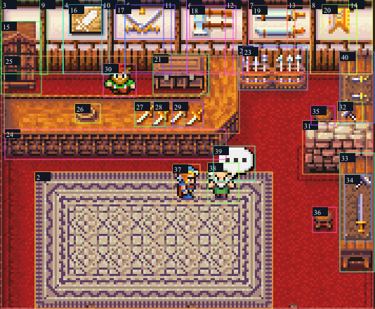
Locked crop: 213, 0, 534, 440; numbers index components below. Overlapping boxes describe visible extents, not segmentation.
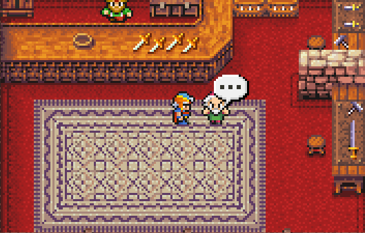
floor / observed reference pixels / layer 0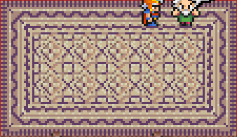
rug / observed reference pixels / layer 1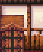
wall-panel-0 / observed reference pixels / layer 2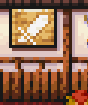
wall-panel-1 / observed reference pixels / layer 2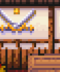
wall-panel-2 / observed reference pixels / layer 2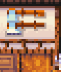
wall-panel-3 / observed reference pixels / layer 2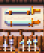
wall-panel-4 / observed reference pixels / layer 2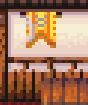
wall-panel-5 / observed reference pixels / layer 2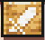
mounted-shield / observed reference pixels / layer 4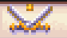
crossed-swords / observed reference pixels / layer 4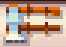
mounted-axes / observed reference pixels / layer 4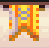
mounted-blades / observed reference pixels / layer 4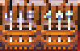
rack / observed reference pixels / layer 5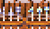
rack-swords / observed reference pixels / layer 6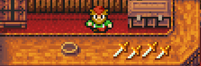
countertop / observed reference pixels / layer 7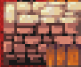
forge / observed reference pixels / layer 6Layer order increases toward foreground. Graph arrows: front occluder → behind component.
| Layer | Components |
|---|---|
| 0 | floor |
| 1 | rug |
| 2 | wall-panel-0, wall-panel-1, wall-panel-2, wall-panel-3, wall-panel-4, wall-panel-5 |
| 3 | wall-post-0, wall-post-1, wall-post-2, wall-post-3, wall-post-4, wall-post-5 |
| 4 | cabinet, mounted-shield, crossed-swords, mounted-axes, mounted-spears, mounted-blades |
| 5 | chest, rack, upper-stool, lower-stool, right-wall-rack |
| 6 | rack-swords, counter-fascia, forge, bench |
| 7 | countertop |
| 8 | dish, dagger-0, dagger-1, dagger-2, smith, forge-tool, bench-tools |
| 9 | firion, customer |
| 10 | dialogue |
countertop → counter-fascia dish → countertop dagger-0 → countertop dagger-1 → countertop dagger-2 → countertop countertop → smith rug → floor firion → rug customer → rug dialogue → customer rack-swords → rack bench-tools → bench
Queue only. Geometry and pixels are unresolved, not observed reference data.
| Component | Hidden field needing inference | Existing generated counterpart (candidate) |
|---|---|---|
| floor | floor beneath rug and furniture [inferred-unresolved] | Unmapped |
| rug | rug beneath actors [inferred-unresolved] | Unmapped |
| wall-panel-0 | rear wall concealed by fixtures [inferred-unresolved] | Unmapped |
| wall-panel-1 | rear wall concealed by fixtures [inferred-unresolved] | Unmapped |
| wall-panel-2 | rear wall concealed by fixtures [inferred-unresolved] | Unmapped |
| wall-panel-3 | rear wall concealed by fixtures [inferred-unresolved] | Unmapped |
| wall-panel-4 | rear wall concealed by fixtures [inferred-unresolved] | Unmapped |
| wall-panel-5 | rear wall concealed by fixtures [inferred-unresolved] | Unmapped |
| cabinet | rear and inner shelves [inferred-unresolved] | Unmapped |
| chest | rear feet and back [inferred-unresolved] | Unmapped |
| rack | rack behind weapons [inferred-unresolved] | Unmapped |
| counter-fascia | counter rear face and hidden depth [inferred-unresolved] | ../shop-layered-tiles-v3/tiles/counter-straight-face.png |
| countertop | surface beneath dish and blades [inferred-unresolved] | ../shop-layered-tiles-v3/tiles/counter-straight-top.png |
| dish | base underside [inferred-unresolved] | Unmapped |
| smith | lower body behind counter [inferred-unresolved] | Unmapped |
| forge | forge back and hearth interior [inferred-unresolved] | Unmapped |
| bench | bench back and legs [inferred-unresolved] | Unmapped |
| firion | rug behind player [inferred-unresolved] | Unmapped |
| customer | rug behind customer [inferred-unresolved] | Unmapped |
| dialogue | head pixels behind bubble [inferred-unresolved] | Unmapped |
| right-wall-rack | rack backing beneath tools [inferred-unresolved] | Unmapped |
Coverage: {"majorVisibleComponentsSeeded":true,"semanticExhaustiveness":false,"unmodeled":["individual texture pixels","subpixel lighting","minimap and exterior beyond locked crop"],"clipped":["outer room boundary at locked crop edges"]}
Preserved room reference
{}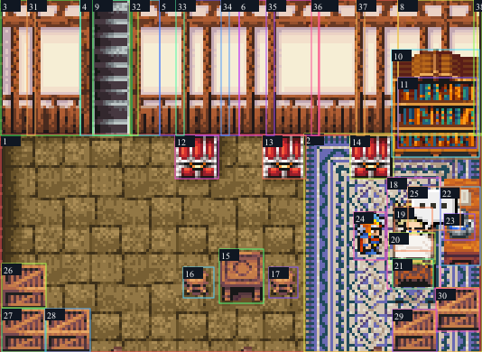
Locked crop: 69, 0, 534, 390; numbers index components below. Overlapping boxes describe visible extents, not segmentation.
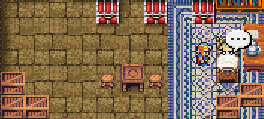
floor / observed reference pixels / layer 0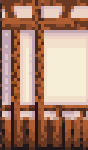
wall-panel-0 / observed reference pixels / layer 2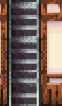
wall-panel-1 / observed reference pixels / layer 2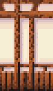
wall-panel-2 / observed reference pixels / layer 2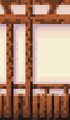
wall-panel-3 / observed reference pixels / layer 2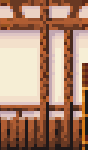
wall-panel-4 / observed reference pixels / layer 2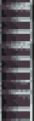
stairs / observed reference pixels / layer 4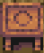
table / observed reference pixels / layer 5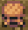
stool-right / observed reference pixels / layer 5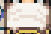
sheets / observed reference pixels / layer 7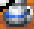
jug / observed reference pixels / layer 7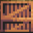
crate-0 / observed reference pixels / layer 8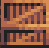
crate-1 / observed reference pixels / layer 8Layer order increases toward foreground. Graph arrows: front occluder → behind component.
| Layer | Components |
|---|---|
| 0 | floor |
| 1 | rug |
| 2 | wall-panel-0, wall-panel-1, wall-panel-2, wall-panel-3, wall-panel-4, wall-panel-5 |
| 3 | wall-post-0, wall-post-1, wall-post-2, wall-post-3, wall-post-4, wall-post-5, wall-post-6, wall-post-7 |
| 4 | stairs, bookcase |
| 5 | books, chair-0, chair-1, chair-2, table, stool-left, stool-right, bedframe, desk |
| 6 | scott |
| 7 | sheets, jug |
| 8 | footboard, firion, crate-0, crate-1, crate-2, crate-3, crate-4 |
| 9 | dialogue |
rug → floor books → bookcase bookcase → wall-panel-5 scott → bedframe sheets → scott footboard → sheets dialogue → scott jug → desk firion → rug crate-3 → rug crate-4 → rug
Queue only. Geometry and pixels are unresolved, not observed reference data.
| Component | Hidden field needing inference | Existing generated counterpart (candidate) |
|---|---|---|
| floor | floor beneath all furnishings [inferred-unresolved] | Unmapped |
| rug | rug behind bed desk and crates [inferred-unresolved] | ../../Assets/Art/Production/InteriorDetailsV4/rugs/scott-blue-cream.png |
| wall-panel-0 | wall behind bookcase [inferred-unresolved] | Unmapped |
| wall-panel-1 | wall behind bookcase [inferred-unresolved] | Unmapped |
| wall-panel-2 | wall behind bookcase [inferred-unresolved] | Unmapped |
| wall-panel-3 | wall behind bookcase [inferred-unresolved] | Unmapped |
| wall-panel-4 | wall behind bookcase [inferred-unresolved] | Unmapped |
| wall-panel-5 | wall behind bookcase [inferred-unresolved] | Unmapped |
| stairs | upper stair continuation [inferred-unresolved] | Unmapped |
| bookcase | shelves behind books [inferred-unresolved] | Unmapped |
| chair-0 | rear chair legs [inferred-unresolved] | ../../Assets/Art/Production/InteriorRefinementV5/red-ivory-seat.png |
| chair-1 | rear chair legs [inferred-unresolved] | ../../Assets/Art/Production/InteriorRefinementV5/red-ivory-seat.png |
| chair-2 | rear chair legs [inferred-unresolved] | ../../Assets/Art/Production/InteriorRefinementV5/red-ivory-seat.png |
| table | rear legs [inferred-unresolved] | ../../Assets/Art/Production/InteriorRefinementV5/square-table.png |
| stool-left | rear legs [inferred-unresolved] | ../../Assets/Art/Production/InteriorRefinementV5/tan-stool.png |
| stool-right | rear legs [inferred-unresolved] | ../../Assets/Art/Production/InteriorRefinementV5/tan-stool.png |
| bedframe | backing beneath actor sheets and footboard [inferred-unresolved] | ../bed-layers-v1/rear-backing.png |
| scott | body beneath sheets [inferred-unresolved] | Unmapped |
| sheets | sheet extent behind footboard [inferred-unresolved] | ../bed-layers-v1/sheet-overlay.png |
| footboard | rear face [inferred-unresolved] | ../bed-layers-v1/foreground-footboard.png |
| desk | desk behind jug [inferred-unresolved] | ../../Assets/Art/Production/InteriorRefinementV5/bedside-table-jug.png |
| jug | jug underside [inferred-unresolved] | Unmapped |
| firion | rug behind player [inferred-unresolved] | Unmapped |
| dialogue | Scott head behind bubble [inferred-unresolved] | ../bed-layers-v1/dialogue-slot.png |
| crate-0 | back and floor beneath crate [inferred-unresolved] | ../../Assets/Art/Production/InteriorRefinementV5/flat-crate.png |
| crate-1 | back and floor beneath crate [inferred-unresolved] | ../../Assets/Art/Production/InteriorRefinementV5/flat-crate.png |
| crate-2 | back and floor beneath crate [inferred-unresolved] | ../../Assets/Art/Production/InteriorRefinementV5/flat-crate.png |
| crate-3 | back and floor beneath crate [inferred-unresolved] | ../../Assets/Art/Production/InteriorRefinementV5/flat-crate.png |
| crate-4 | back and floor beneath crate [inferred-unresolved] | ../../Assets/Art/Production/InteriorRefinementV5/flat-crate.png |
Coverage: {"majorVisibleComponentsSeeded":true,"semanticExhaustiveness":false,"unmodeled":["individual texture pixels","subpixel lighting","minimap and exterior beyond locked crop"],"clipped":["outer room boundary at locked crop edges"]}
User-provided reference excerpt; no remote URL asserted.
{}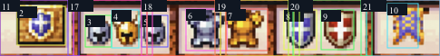
Locked crop: 0, 0, 485, 62; numbers index components below. Overlapping boxes describe visible extents, not segmentation.
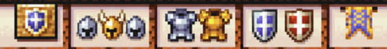
shared-wall-backing-0 / observed reference pixels / layer 0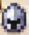
helmet-steel-right-4 / observed reference pixels / layer 5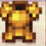
breastplate-gold-6 / observed reference pixels / layer 5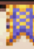
pennant-9 / observed reference pixels / layer 5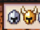
wall-panel-1-11 / observed reference pixels / layer 1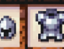
wall-panel-2-12 / observed reference pixels / layer 1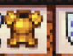
wall-panel-3-13 / observed reference pixels / layer 1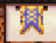
wall-panel-5-15 / observed reference pixels / layer 1Layer order increases toward foreground. Graph arrows: front occluder → behind component.
| Layer | Components |
|---|---|
| 0 | shared-wall-backing-0 |
| 1 | wall-panel-0-10, wall-panel-1-11, wall-panel-2-12, wall-panel-3-13, wall-panel-4-14, wall-panel-5-15 |
| 2 | wooden-wall-post-1-16, wooden-wall-post-2-17, wooden-wall-post-3-18, wooden-wall-post-4-19, wooden-wall-post-5-20 |
| 5 | shield-plaque-1, helmet-steel-left-2, helmet-gold-3, helmet-steel-right-4, breastplate-steel-5, breastplate-gold-6, shield-blue-7, shield-red-8, pennant-9 |
shield-plaque-1 → shared-wall-backing-0 helmet-steel-left-2 → shared-wall-backing-0 helmet-gold-3 → shared-wall-backing-0 helmet-steel-right-4 → shared-wall-backing-0 breastplate-steel-5 → shared-wall-backing-0 breastplate-gold-6 → shared-wall-backing-0 shield-blue-7 → shared-wall-backing-0 shield-red-8 → shared-wall-backing-0 pennant-9 → shared-wall-backing-0
Queue only. Geometry and pixels are unresolved, not observed reference data.
| Component | Hidden field needing inference | Existing generated counterpart (candidate) |
|---|---|---|
| shared-wall-backing-0 | back / underside / geometry clipped outside excerpt [inferred-unresolved] | Unmapped |
| shield-plaque-1 | back / underside / geometry clipped outside excerpt [inferred-unresolved] | Unmapped |
| helmet-steel-left-2 | back / underside / geometry clipped outside excerpt [inferred-unresolved] | Unmapped |
| helmet-gold-3 | back / underside / geometry clipped outside excerpt [inferred-unresolved] | Unmapped |
| helmet-steel-right-4 | back / underside / geometry clipped outside excerpt [inferred-unresolved] | Unmapped |
| breastplate-steel-5 | back / underside / geometry clipped outside excerpt [inferred-unresolved] | Unmapped |
| breastplate-gold-6 | back / underside / geometry clipped outside excerpt [inferred-unresolved] | Unmapped |
| shield-blue-7 | back / underside / geometry clipped outside excerpt [inferred-unresolved] | Unmapped |
| shield-red-8 | back / underside / geometry clipped outside excerpt [inferred-unresolved] | Unmapped |
| pennant-9 | back / underside / geometry clipped outside excerpt [inferred-unresolved] | Unmapped |
| wall-panel-0-10 | back / underside / geometry clipped outside excerpt [inferred-unresolved] | Unmapped |
| wall-panel-1-11 | back / underside / geometry clipped outside excerpt [inferred-unresolved] | Unmapped |
| wall-panel-2-12 | back / underside / geometry clipped outside excerpt [inferred-unresolved] | Unmapped |
| wall-panel-3-13 | back / underside / geometry clipped outside excerpt [inferred-unresolved] | Unmapped |
| wall-panel-4-14 | back / underside / geometry clipped outside excerpt [inferred-unresolved] | Unmapped |
| wall-panel-5-15 | back / underside / geometry clipped outside excerpt [inferred-unresolved] | Unmapped |
| wooden-wall-post-1-16 | back / underside / geometry clipped outside excerpt [inferred-unresolved] | Unmapped |
| wooden-wall-post-2-17 | back / underside / geometry clipped outside excerpt [inferred-unresolved] | Unmapped |
| wooden-wall-post-3-18 | back / underside / geometry clipped outside excerpt [inferred-unresolved] | Unmapped |
| wooden-wall-post-4-19 | back / underside / geometry clipped outside excerpt [inferred-unresolved] | Unmapped |
| wooden-wall-post-5-20 | back / underside / geometry clipped outside excerpt [inferred-unresolved] | Unmapped |
Coverage: {"majorVisibleComponentsSeeded":true,"semanticExhaustiveness":false,"unmodeled":["individual texels and ambiguous fine details"],"clipped":["original screenshot context outside user excerpt; clipped backs and supports unknown"]}
User-provided reference excerpt; no remote URL asserted.
{}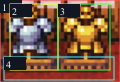
Locked crop: 0, 0, 120, 82; numbers index components below. Overlapping boxes describe visible extents, not segmentation.
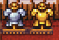
reference-background-0 / observed reference pixels / layer 0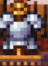
steel-armor-1 / observed reference pixels / layer 5Layer order increases toward foreground. Graph arrows: front occluder → behind component.
| Layer | Components |
|---|---|
| 0 | reference-background-0 |
| 5 | steel-armor-1, gold-armor-2, stand-base-3 |
steel-armor-1 → reference-background-0 gold-armor-2 → reference-background-0 stand-base-3 → reference-background-0
Queue only. Geometry and pixels are unresolved, not observed reference data.
| Component | Hidden field needing inference | Existing generated counterpart (candidate) |
|---|---|---|
| reference-background-0 | back / underside / geometry clipped outside excerpt [inferred-unresolved] | Unmapped |
| steel-armor-1 | back / underside / geometry clipped outside excerpt [inferred-unresolved] | Unmapped |
| gold-armor-2 | back / underside / geometry clipped outside excerpt [inferred-unresolved] | Unmapped |
| stand-base-3 | back / underside / geometry clipped outside excerpt [inferred-unresolved] | Unmapped |
Coverage: {"majorVisibleComponentsSeeded":true,"semanticExhaustiveness":false,"unmodeled":["individual texels and ambiguous fine details"],"clipped":["original screenshot context outside user excerpt; clipped backs and supports unknown"]}
User-provided reference excerpt; no remote URL asserted.
{}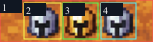
Locked crop: 0, 0, 153, 42; numbers index components below. Overlapping boxes describe visible extents, not segmentation.
Layer order increases toward foreground. Graph arrows: front occluder → behind component.
| Layer | Components |
|---|---|
| 0 | shared-countertop-0 |
| 5 | helmet-steel-left-1, helmet-gold-2, helmet-steel-right-3 |
helmet-steel-left-1 → shared-countertop-0 helmet-gold-2 → shared-countertop-0 helmet-steel-right-3 → shared-countertop-0
Queue only. Geometry and pixels are unresolved, not observed reference data.
| Component | Hidden field needing inference | Existing generated counterpart (candidate) |
|---|---|---|
| shared-countertop-0 | back / underside / geometry clipped outside excerpt [inferred-unresolved] | Unmapped |
| helmet-steel-left-1 | back / underside / geometry clipped outside excerpt [inferred-unresolved] | Unmapped |
| helmet-gold-2 | back / underside / geometry clipped outside excerpt [inferred-unresolved] | Unmapped |
| helmet-steel-right-3 | back / underside / geometry clipped outside excerpt [inferred-unresolved] | Unmapped |
Coverage: {"majorVisibleComponentsSeeded":true,"semanticExhaustiveness":false,"unmodeled":["individual texels and ambiguous fine details"],"clipped":["original screenshot context outside user excerpt; clipped backs and supports unknown"]}
User-provided reference excerpt; no remote URL asserted.
{}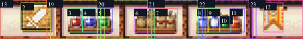
Locked crop: 0, 0, 517, 67; numbers index components below. Overlapping boxes describe visible extents, not segmentation.
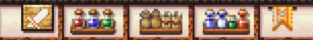
shared-wall-backing-0 / observed reference pixels / layer 0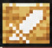
sword-plaque-1 / observed reference pixels / layer 5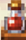
potion-red-2 / observed reference pixels / layer 5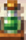
potion-green-4 / observed reference pixels / layer 5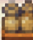
parcel-left-5 / observed reference pixels / layer 5Layer order increases toward foreground. Graph arrows: front occluder → behind component.
| Layer | Components |
|---|---|
| 0 | shared-wall-backing-0 |
| 1 | wall-panel-0-12, wall-panel-1-13, wall-panel-2-14, wall-panel-3-15, wall-panel-4-16, wall-panel-5-17 |
| 2 | wooden-wall-post-1-18, wooden-wall-post-2-19, wooden-wall-post-3-20, wooden-wall-post-4-21, wooden-wall-post-5-22 |
| 5 | sword-plaque-1, potion-red-2, potion-blue-3, potion-green-4, parcel-left-5, parcel-right-6, potion-blue-left-7, potion-blue-right-8, potion-green-9, potion-red-right-10, pennant-11 |
sword-plaque-1 → shared-wall-backing-0 potion-red-2 → shared-wall-backing-0 potion-blue-3 → shared-wall-backing-0 potion-green-4 → shared-wall-backing-0 parcel-left-5 → shared-wall-backing-0 parcel-right-6 → shared-wall-backing-0 potion-blue-left-7 → shared-wall-backing-0 potion-blue-right-8 → shared-wall-backing-0 potion-green-9 → shared-wall-backing-0 potion-red-right-10 → shared-wall-backing-0 pennant-11 → shared-wall-backing-0
Queue only. Geometry and pixels are unresolved, not observed reference data.
| Component | Hidden field needing inference | Existing generated counterpart (candidate) |
|---|---|---|
| shared-wall-backing-0 | back / underside / geometry clipped outside excerpt [inferred-unresolved] | Unmapped |
| sword-plaque-1 | back / underside / geometry clipped outside excerpt [inferred-unresolved] | Unmapped |
| potion-red-2 | back / underside / geometry clipped outside excerpt [inferred-unresolved] | Unmapped |
| potion-blue-3 | back / underside / geometry clipped outside excerpt [inferred-unresolved] | Unmapped |
| potion-green-4 | back / underside / geometry clipped outside excerpt [inferred-unresolved] | Unmapped |
| parcel-left-5 | back / underside / geometry clipped outside excerpt [inferred-unresolved] | Unmapped |
| parcel-right-6 | back / underside / geometry clipped outside excerpt [inferred-unresolved] | Unmapped |
| potion-blue-left-7 | back / underside / geometry clipped outside excerpt [inferred-unresolved] | Unmapped |
| potion-blue-right-8 | back / underside / geometry clipped outside excerpt [inferred-unresolved] | Unmapped |
| potion-green-9 | back / underside / geometry clipped outside excerpt [inferred-unresolved] | Unmapped |
| potion-red-right-10 | back / underside / geometry clipped outside excerpt [inferred-unresolved] | Unmapped |
| pennant-11 | back / underside / geometry clipped outside excerpt [inferred-unresolved] | Unmapped |
| wall-panel-0-12 | back / underside / geometry clipped outside excerpt [inferred-unresolved] | Unmapped |
| wall-panel-1-13 | back / underside / geometry clipped outside excerpt [inferred-unresolved] | Unmapped |
| wall-panel-2-14 | back / underside / geometry clipped outside excerpt [inferred-unresolved] | Unmapped |
| wall-panel-3-15 | back / underside / geometry clipped outside excerpt [inferred-unresolved] | Unmapped |
| wall-panel-4-16 | back / underside / geometry clipped outside excerpt [inferred-unresolved] | Unmapped |
| wall-panel-5-17 | back / underside / geometry clipped outside excerpt [inferred-unresolved] | Unmapped |
| wooden-wall-post-1-18 | back / underside / geometry clipped outside excerpt [inferred-unresolved] | Unmapped |
| wooden-wall-post-2-19 | back / underside / geometry clipped outside excerpt [inferred-unresolved] | Unmapped |
| wooden-wall-post-3-20 | back / underside / geometry clipped outside excerpt [inferred-unresolved] | Unmapped |
| wooden-wall-post-4-21 | back / underside / geometry clipped outside excerpt [inferred-unresolved] | Unmapped |
| wooden-wall-post-5-22 | back / underside / geometry clipped outside excerpt [inferred-unresolved] | Unmapped |
Coverage: {"majorVisibleComponentsSeeded":true,"semanticExhaustiveness":false,"unmodeled":["individual texels and ambiguous fine details"],"clipped":["original screenshot context outside user excerpt; clipped backs and supports unknown"]}
User-provided reference excerpt; no remote URL asserted.
{}Locked crop: 0, 0, 127, 73; numbers index components below. Overlapping boxes describe visible extents, not segmentation.
Layer order increases toward foreground. Graph arrows: front occluder → behind component.
| Layer | Components |
|---|---|
| 0 | shared-rack-backing-0 |
| 2 | rack-left-upright-1, rack-right-upright-2 |
| 3 | shelf-rail-0-3, shelf-rail-1-4, shelf-rail-2-5, center-upright-19 |
| 5 | upper-bottle-1-6, upper-bottle-2-7, upper-bottle-3-8, upper-bottle-4-9, upper-bottle-5-10, upper-bottle-6-11, upper-bottle-7-12, lower-bottle-1-13, lower-bottle-2-14, lower-bottle-3-15, lower-bottle-4-16, lower-bottle-5-17, lower-bottle-6-18 |
upper-bottle-1-6 → shared-rack-backing-0 upper-bottle-2-7 → shared-rack-backing-0 upper-bottle-3-8 → shared-rack-backing-0 upper-bottle-4-9 → shared-rack-backing-0 upper-bottle-5-10 → shared-rack-backing-0 upper-bottle-6-11 → shared-rack-backing-0 upper-bottle-7-12 → shared-rack-backing-0 lower-bottle-1-13 → shared-rack-backing-0 lower-bottle-2-14 → shared-rack-backing-0 lower-bottle-3-15 → shared-rack-backing-0 lower-bottle-4-16 → shared-rack-backing-0 lower-bottle-5-17 → shared-rack-backing-0 lower-bottle-6-18 → shared-rack-backing-0
Queue only. Geometry and pixels are unresolved, not observed reference data.
| Component | Hidden field needing inference | Existing generated counterpart (candidate) |
|---|---|---|
| shared-rack-backing-0 | back / underside / geometry clipped outside excerpt [inferred-unresolved] | Unmapped |
| rack-left-upright-1 | back / underside / geometry clipped outside excerpt [inferred-unresolved] | Unmapped |
| rack-right-upright-2 | back / underside / geometry clipped outside excerpt [inferred-unresolved] | Unmapped |
| shelf-rail-0-3 | back / underside / geometry clipped outside excerpt [inferred-unresolved] | Unmapped |
| shelf-rail-1-4 | back / underside / geometry clipped outside excerpt [inferred-unresolved] | Unmapped |
| shelf-rail-2-5 | back / underside / geometry clipped outside excerpt [inferred-unresolved] | Unmapped |
| upper-bottle-1-6 | back / underside / geometry clipped outside excerpt [inferred-unresolved] | Unmapped |
| upper-bottle-2-7 | back / underside / geometry clipped outside excerpt [inferred-unresolved] | Unmapped |
| upper-bottle-3-8 | back / underside / geometry clipped outside excerpt [inferred-unresolved] | Unmapped |
| upper-bottle-4-9 | back / underside / geometry clipped outside excerpt [inferred-unresolved] | Unmapped |
| upper-bottle-5-10 | back / underside / geometry clipped outside excerpt [inferred-unresolved] | Unmapped |
| upper-bottle-6-11 | back / underside / geometry clipped outside excerpt [inferred-unresolved] | Unmapped |
| upper-bottle-7-12 | back / underside / geometry clipped outside excerpt [inferred-unresolved] | Unmapped |
| lower-bottle-1-13 | back / underside / geometry clipped outside excerpt [inferred-unresolved] | Unmapped |
| lower-bottle-2-14 | back / underside / geometry clipped outside excerpt [inferred-unresolved] | Unmapped |
| lower-bottle-3-15 | back / underside / geometry clipped outside excerpt [inferred-unresolved] | Unmapped |
| lower-bottle-4-16 | back / underside / geometry clipped outside excerpt [inferred-unresolved] | Unmapped |
| lower-bottle-5-17 | back / underside / geometry clipped outside excerpt [inferred-unresolved] | Unmapped |
| lower-bottle-6-18 | back / underside / geometry clipped outside excerpt [inferred-unresolved] | Unmapped |
| center-upright-19 | back / underside / geometry clipped outside excerpt [inferred-unresolved] | Unmapped |
Coverage: {"majorVisibleComponentsSeeded":true,"semanticExhaustiveness":false,"unmodeled":["individual texels and ambiguous fine details"],"clipped":["original screenshot context outside user excerpt; clipped backs and supports unknown"]}
User-provided reference excerpt; no remote URL asserted.
{}Locked crop: 0, 0, 66, 123; numbers index components below. Overlapping boxes describe visible extents, not segmentation.
Layer order increases toward foreground. Graph arrows: front occluder → behind component.
| Layer | Components |
|---|---|
| 0 | shared-rack-backing-0 |
| 2 | rack-left-upright-3, rack-right-upright-4 |
| 3 | shelf-rail-0-5, shelf-rail-1-6, shelf-rail-2-7 |
| 5 | parcel-left-1, parcel-right-2, middle-bottle-1-8, middle-bottle-2-9, middle-bottle-3-10, lower-container-1-11, lower-container-2-12 |
parcel-left-1 → shared-rack-backing-0 parcel-right-2 → shared-rack-backing-0 middle-bottle-1-8 → shared-rack-backing-0 middle-bottle-2-9 → shared-rack-backing-0 middle-bottle-3-10 → shared-rack-backing-0 lower-container-1-11 → shared-rack-backing-0 lower-container-2-12 → shared-rack-backing-0
Queue only. Geometry and pixels are unresolved, not observed reference data.
| Component | Hidden field needing inference | Existing generated counterpart (candidate) |
|---|---|---|
| shared-rack-backing-0 | back / underside / geometry clipped outside excerpt [inferred-unresolved] | Unmapped |
| parcel-left-1 | back / underside / geometry clipped outside excerpt [inferred-unresolved] | Unmapped |
| parcel-right-2 | back / underside / geometry clipped outside excerpt [inferred-unresolved] | Unmapped |
| rack-left-upright-3 | back / underside / geometry clipped outside excerpt [inferred-unresolved] | Unmapped |
| rack-right-upright-4 | back / underside / geometry clipped outside excerpt [inferred-unresolved] | Unmapped |
| shelf-rail-0-5 | back / underside / geometry clipped outside excerpt [inferred-unresolved] | Unmapped |
| shelf-rail-1-6 | back / underside / geometry clipped outside excerpt [inferred-unresolved] | Unmapped |
| shelf-rail-2-7 | back / underside / geometry clipped outside excerpt [inferred-unresolved] | Unmapped |
| middle-bottle-1-8 | back / underside / geometry clipped outside excerpt [inferred-unresolved] | Unmapped |
| middle-bottle-2-9 | back / underside / geometry clipped outside excerpt [inferred-unresolved] | Unmapped |
| middle-bottle-3-10 | back / underside / geometry clipped outside excerpt [inferred-unresolved] | Unmapped |
| lower-container-1-11 | back / underside / geometry clipped outside excerpt [inferred-unresolved] | Unmapped |
| lower-container-2-12 | back / underside / geometry clipped outside excerpt [inferred-unresolved] | Unmapped |
Coverage: {"majorVisibleComponentsSeeded":true,"semanticExhaustiveness":false,"unmodeled":["individual texels and ambiguous fine details"],"clipped":["original screenshot context outside user excerpt; clipped backs and supports unknown"]}
User-provided reference excerpt; no remote URL asserted.
{}Locked crop: 0, 0, 66, 186; numbers index components below. Overlapping boxes describe visible extents, not segmentation.
Layer order increases toward foreground. Graph arrows: front occluder → behind component.
| Layer | Components |
|---|---|
| 0 | shared-rack-backing-0 |
| 2 | rack-left-upright-6, rack-right-upright-7 |
| 3 | shelf-rail-0-8, shelf-rail-1-9, shelf-rail-2-10 |
| 5 | parcel-left-1, parcel-right-2, parcel-lower-left-3, parcel-lower-right-4, lower-support-5, middle-bottle-1-11, middle-bottle-2-12, middle-bottle-3-13 |
parcel-left-1 → shared-rack-backing-0 parcel-right-2 → shared-rack-backing-0 parcel-lower-left-3 → shared-rack-backing-0 parcel-lower-right-4 → shared-rack-backing-0 lower-support-5 → shared-rack-backing-0 middle-bottle-1-11 → shared-rack-backing-0 middle-bottle-2-12 → shared-rack-backing-0 middle-bottle-3-13 → shared-rack-backing-0
Queue only. Geometry and pixels are unresolved, not observed reference data.
| Component | Hidden field needing inference | Existing generated counterpart (candidate) |
|---|---|---|
| shared-rack-backing-0 | back / underside / geometry clipped outside excerpt [inferred-unresolved] | Unmapped |
| parcel-left-1 | back / underside / geometry clipped outside excerpt [inferred-unresolved] | Unmapped |
| parcel-right-2 | back / underside / geometry clipped outside excerpt [inferred-unresolved] | Unmapped |
| parcel-lower-left-3 | back / underside / geometry clipped outside excerpt [inferred-unresolved] | Unmapped |
| parcel-lower-right-4 | back / underside / geometry clipped outside excerpt [inferred-unresolved] | Unmapped |
| lower-support-5 | back / underside / geometry clipped outside excerpt [inferred-unresolved] | Unmapped |
| rack-left-upright-6 | back / underside / geometry clipped outside excerpt [inferred-unresolved] | Unmapped |
| rack-right-upright-7 | back / underside / geometry clipped outside excerpt [inferred-unresolved] | Unmapped |
| shelf-rail-0-8 | back / underside / geometry clipped outside excerpt [inferred-unresolved] | Unmapped |
| shelf-rail-1-9 | back / underside / geometry clipped outside excerpt [inferred-unresolved] | Unmapped |
| shelf-rail-2-10 | back / underside / geometry clipped outside excerpt [inferred-unresolved] | Unmapped |
| middle-bottle-1-11 | back / underside / geometry clipped outside excerpt [inferred-unresolved] | Unmapped |
| middle-bottle-2-12 | back / underside / geometry clipped outside excerpt [inferred-unresolved] | Unmapped |
| middle-bottle-3-13 | back / underside / geometry clipped outside excerpt [inferred-unresolved] | Unmapped |
Coverage: {"majorVisibleComponentsSeeded":true,"semanticExhaustiveness":false,"unmodeled":["individual texels and ambiguous fine details"],"clipped":["original screenshot context outside user excerpt; clipped backs and supports unknown"]}
User-provided reference excerpt; no remote URL asserted.
{}Locked crop: 0, 0, 130, 46; numbers index components below. Overlapping boxes describe visible extents, not segmentation.
Layer order increases toward foreground. Graph arrows: front occluder → behind component.
| Layer | Components |
|---|---|
| 0 | shared-countertop-0 |
| 5 | potion-red-1, potion-blue-2, potion-green-3 |
potion-red-1 → shared-countertop-0 potion-blue-2 → shared-countertop-0 potion-green-3 → shared-countertop-0
Queue only. Geometry and pixels are unresolved, not observed reference data.
| Component | Hidden field needing inference | Existing generated counterpart (candidate) |
|---|---|---|
| shared-countertop-0 | back / underside / geometry clipped outside excerpt [inferred-unresolved] | Unmapped |
| potion-red-1 | back / underside / geometry clipped outside excerpt [inferred-unresolved] | Unmapped |
| potion-blue-2 | back / underside / geometry clipped outside excerpt [inferred-unresolved] | Unmapped |
| potion-green-3 | back / underside / geometry clipped outside excerpt [inferred-unresolved] | Unmapped |
Coverage: {"majorVisibleComponentsSeeded":true,"semanticExhaustiveness":false,"unmodeled":["individual texels and ambiguous fine details"],"clipped":["original screenshot context outside user excerpt; clipped backs and supports unknown"]}
User-provided reference excerpt; no remote URL asserted.
{}Locked crop: 0, 0, 500, 76; numbers index components below. Overlapping boxes describe visible extents, not segmentation.
Layer order increases toward foreground. Graph arrows: front occluder → behind component.
| Layer | Components |
|---|---|
| 0 | shared-wall-backing-0 |
| 1 | wall-panel-0-6, wall-panel-1-7, wall-panel-2-8, wall-panel-3-9, wall-panel-4-10 |
| 2 | wooden-wall-post-1-11, wooden-wall-post-2-12, wooden-wall-post-3-13, wooden-wall-post-4-14 |
| 5 | ice-sign-1, arcane-sign-2, bookcase-left-3, bookcase-right-4, moon-sign-5, left-upper-book-1-15, left-upper-book-2-16, left-upper-book-3-17, left-upper-book-4-18, left-upper-book-5-19, left-upper-book-6-20, left-upper-book-7-21, left-upper-book-8-22, left-lower-book-1-23, left-lower-book-2-24, left-lower-book-3-25, left-lower-book-4-26, left-lower-book-5-27, left-lower-book-6-28, left-lower-book-7-29, left-lower-book-8-30, right-upper-book-1-31, right-upper-book-2-32, right-upper-book-3-33, right-upper-book-4-34, right-upper-book-5-35, right-upper-book-6-36, right-upper-book-7-37, right-upper-book-8-38, right-lower-book-1-39, right-lower-book-2-40, right-lower-book-3-41, right-lower-book-4-42, right-lower-book-5-43, right-lower-book-6-44, right-lower-book-7-45, right-lower-book-8-46 |
ice-sign-1 → shared-wall-backing-0 arcane-sign-2 → shared-wall-backing-0 bookcase-left-3 → shared-wall-backing-0 bookcase-right-4 → shared-wall-backing-0 moon-sign-5 → shared-wall-backing-0 left-upper-book-1-15 → shared-wall-backing-0 left-upper-book-2-16 → shared-wall-backing-0 left-upper-book-3-17 → shared-wall-backing-0 left-upper-book-4-18 → shared-wall-backing-0 left-upper-book-5-19 → shared-wall-backing-0 left-upper-book-6-20 → shared-wall-backing-0 left-upper-book-7-21 → shared-wall-backing-0 left-upper-book-8-22 → shared-wall-backing-0 left-lower-book-1-23 → shared-wall-backing-0 left-lower-book-2-24 → shared-wall-backing-0 left-lower-book-3-25 → shared-wall-backing-0 left-lower-book-4-26 → shared-wall-backing-0 left-lower-book-5-27 → shared-wall-backing-0 left-lower-book-6-28 → shared-wall-backing-0 left-lower-book-7-29 → shared-wall-backing-0 left-lower-book-8-30 → shared-wall-backing-0 right-upper-book-1-31 → shared-wall-backing-0 right-upper-book-2-32 → shared-wall-backing-0 right-upper-book-3-33 → shared-wall-backing-0 right-upper-book-4-34 → shared-wall-backing-0 right-upper-book-5-35 → shared-wall-backing-0 right-upper-book-6-36 → shared-wall-backing-0 right-upper-book-7-37 → shared-wall-backing-0 right-upper-book-8-38 → shared-wall-backing-0 right-lower-book-1-39 → shared-wall-backing-0 right-lower-book-2-40 → shared-wall-backing-0 right-lower-book-3-41 → shared-wall-backing-0 right-lower-book-4-42 → shared-wall-backing-0 right-lower-book-5-43 → shared-wall-backing-0 right-lower-book-6-44 → shared-wall-backing-0 right-lower-book-7-45 → shared-wall-backing-0 right-lower-book-8-46 → shared-wall-backing-0
Queue only. Geometry and pixels are unresolved, not observed reference data.
| Component | Hidden field needing inference | Existing generated counterpart (candidate) |
|---|---|---|
| shared-wall-backing-0 | back / underside / geometry clipped outside excerpt [inferred-unresolved] | Unmapped |
| ice-sign-1 | back / underside / geometry clipped outside excerpt [inferred-unresolved] | Unmapped |
| arcane-sign-2 | back / underside / geometry clipped outside excerpt [inferred-unresolved] | Unmapped |
| bookcase-left-3 | back / underside / geometry clipped outside excerpt [inferred-unresolved] | Unmapped |
| bookcase-right-4 | back / underside / geometry clipped outside excerpt [inferred-unresolved] | Unmapped |
| moon-sign-5 | back / underside / geometry clipped outside excerpt [inferred-unresolved] | Unmapped |
| wall-panel-0-6 | back / underside / geometry clipped outside excerpt [inferred-unresolved] | Unmapped |
| wall-panel-1-7 | back / underside / geometry clipped outside excerpt [inferred-unresolved] | Unmapped |
| wall-panel-2-8 | back / underside / geometry clipped outside excerpt [inferred-unresolved] | Unmapped |
| wall-panel-3-9 | back / underside / geometry clipped outside excerpt [inferred-unresolved] | Unmapped |
| wall-panel-4-10 | back / underside / geometry clipped outside excerpt [inferred-unresolved] | Unmapped |
| wooden-wall-post-1-11 | back / underside / geometry clipped outside excerpt [inferred-unresolved] | Unmapped |
| wooden-wall-post-2-12 | back / underside / geometry clipped outside excerpt [inferred-unresolved] | Unmapped |
| wooden-wall-post-3-13 | back / underside / geometry clipped outside excerpt [inferred-unresolved] | Unmapped |
| wooden-wall-post-4-14 | back / underside / geometry clipped outside excerpt [inferred-unresolved] | Unmapped |
| left-upper-book-1-15 | back / underside / geometry clipped outside excerpt [inferred-unresolved] | Unmapped |
| left-upper-book-2-16 | back / underside / geometry clipped outside excerpt [inferred-unresolved] | Unmapped |
| left-upper-book-3-17 | back / underside / geometry clipped outside excerpt [inferred-unresolved] | Unmapped |
| left-upper-book-4-18 | back / underside / geometry clipped outside excerpt [inferred-unresolved] | Unmapped |
| left-upper-book-5-19 | back / underside / geometry clipped outside excerpt [inferred-unresolved] | Unmapped |
| left-upper-book-6-20 | back / underside / geometry clipped outside excerpt [inferred-unresolved] | Unmapped |
| left-upper-book-7-21 | back / underside / geometry clipped outside excerpt [inferred-unresolved] | Unmapped |
| left-upper-book-8-22 | back / underside / geometry clipped outside excerpt [inferred-unresolved] | Unmapped |
| left-lower-book-1-23 | back / underside / geometry clipped outside excerpt [inferred-unresolved] | Unmapped |
| left-lower-book-2-24 | back / underside / geometry clipped outside excerpt [inferred-unresolved] | Unmapped |
| left-lower-book-3-25 | back / underside / geometry clipped outside excerpt [inferred-unresolved] | Unmapped |
| left-lower-book-4-26 | back / underside / geometry clipped outside excerpt [inferred-unresolved] | Unmapped |
| left-lower-book-5-27 | back / underside / geometry clipped outside excerpt [inferred-unresolved] | Unmapped |
| left-lower-book-6-28 | back / underside / geometry clipped outside excerpt [inferred-unresolved] | Unmapped |
| left-lower-book-7-29 | back / underside / geometry clipped outside excerpt [inferred-unresolved] | Unmapped |
| left-lower-book-8-30 | back / underside / geometry clipped outside excerpt [inferred-unresolved] | Unmapped |
| right-upper-book-1-31 | back / underside / geometry clipped outside excerpt [inferred-unresolved] | Unmapped |
| right-upper-book-2-32 | back / underside / geometry clipped outside excerpt [inferred-unresolved] | Unmapped |
| right-upper-book-3-33 | back / underside / geometry clipped outside excerpt [inferred-unresolved] | Unmapped |
| right-upper-book-4-34 | back / underside / geometry clipped outside excerpt [inferred-unresolved] | Unmapped |
| right-upper-book-5-35 | back / underside / geometry clipped outside excerpt [inferred-unresolved] | Unmapped |
| right-upper-book-6-36 | back / underside / geometry clipped outside excerpt [inferred-unresolved] | Unmapped |
| right-upper-book-7-37 | back / underside / geometry clipped outside excerpt [inferred-unresolved] | Unmapped |
| right-upper-book-8-38 | back / underside / geometry clipped outside excerpt [inferred-unresolved] | Unmapped |
| right-lower-book-1-39 | back / underside / geometry clipped outside excerpt [inferred-unresolved] | Unmapped |
| right-lower-book-2-40 | back / underside / geometry clipped outside excerpt [inferred-unresolved] | Unmapped |
| right-lower-book-3-41 | back / underside / geometry clipped outside excerpt [inferred-unresolved] | Unmapped |
| right-lower-book-4-42 | back / underside / geometry clipped outside excerpt [inferred-unresolved] | Unmapped |
| right-lower-book-5-43 | back / underside / geometry clipped outside excerpt [inferred-unresolved] | Unmapped |
| right-lower-book-6-44 | back / underside / geometry clipped outside excerpt [inferred-unresolved] | Unmapped |
| right-lower-book-7-45 | back / underside / geometry clipped outside excerpt [inferred-unresolved] | Unmapped |
| right-lower-book-8-46 | back / underside / geometry clipped outside excerpt [inferred-unresolved] | Unmapped |
Coverage: {"majorVisibleComponentsSeeded":true,"semanticExhaustiveness":false,"unmodeled":["individual texels and ambiguous fine details"],"clipped":["original screenshot context outside user excerpt; clipped backs and supports unknown"]}
User-provided reference excerpt; no remote URL asserted.
{}Locked crop: 0, 0, 130, 77; numbers index components below. Overlapping boxes describe visible extents, not segmentation.
Layer order increases toward foreground. Graph arrows: front occluder → behind component.
| Layer | Components |
|---|---|
| 0 | shared-rack-backing-0 |
| 2 | rack-left-upright-1, rack-right-upright-2 |
| 3 | shelf-rail-0-3, shelf-rail-1-4, shelf-rail-2-5, center-upright-26 |
| 5 | upper-book-1-6, upper-book-2-7, upper-book-3-8, upper-book-4-9, upper-book-5-10, upper-book-6-11, upper-book-7-12, upper-book-8-13, upper-book-9-14, upper-book-10-15, lower-book-1-16, lower-book-2-17, lower-book-3-18, lower-book-4-19, lower-book-5-20, lower-book-6-21, lower-book-7-22, lower-book-8-23, lower-book-9-24, lower-book-10-25 |
upper-book-1-6 → shared-rack-backing-0 upper-book-2-7 → shared-rack-backing-0 upper-book-3-8 → shared-rack-backing-0 upper-book-4-9 → shared-rack-backing-0 upper-book-5-10 → shared-rack-backing-0 upper-book-6-11 → shared-rack-backing-0 upper-book-7-12 → shared-rack-backing-0 upper-book-8-13 → shared-rack-backing-0 upper-book-9-14 → shared-rack-backing-0 upper-book-10-15 → shared-rack-backing-0 lower-book-1-16 → shared-rack-backing-0 lower-book-2-17 → shared-rack-backing-0 lower-book-3-18 → shared-rack-backing-0 lower-book-4-19 → shared-rack-backing-0 lower-book-5-20 → shared-rack-backing-0 lower-book-6-21 → shared-rack-backing-0 lower-book-7-22 → shared-rack-backing-0 lower-book-8-23 → shared-rack-backing-0 lower-book-9-24 → shared-rack-backing-0 lower-book-10-25 → shared-rack-backing-0
Queue only. Geometry and pixels are unresolved, not observed reference data.
| Component | Hidden field needing inference | Existing generated counterpart (candidate) |
|---|---|---|
| shared-rack-backing-0 | back / underside / geometry clipped outside excerpt [inferred-unresolved] | Unmapped |
| rack-left-upright-1 | back / underside / geometry clipped outside excerpt [inferred-unresolved] | Unmapped |
| rack-right-upright-2 | back / underside / geometry clipped outside excerpt [inferred-unresolved] | Unmapped |
| shelf-rail-0-3 | back / underside / geometry clipped outside excerpt [inferred-unresolved] | Unmapped |
| shelf-rail-1-4 | back / underside / geometry clipped outside excerpt [inferred-unresolved] | Unmapped |
| shelf-rail-2-5 | back / underside / geometry clipped outside excerpt [inferred-unresolved] | Unmapped |
| upper-book-1-6 | back / underside / geometry clipped outside excerpt [inferred-unresolved] | Unmapped |
| upper-book-2-7 | back / underside / geometry clipped outside excerpt [inferred-unresolved] | Unmapped |
| upper-book-3-8 | back / underside / geometry clipped outside excerpt [inferred-unresolved] | Unmapped |
| upper-book-4-9 | back / underside / geometry clipped outside excerpt [inferred-unresolved] | Unmapped |
| upper-book-5-10 | back / underside / geometry clipped outside excerpt [inferred-unresolved] | Unmapped |
| upper-book-6-11 | back / underside / geometry clipped outside excerpt [inferred-unresolved] | Unmapped |
| upper-book-7-12 | back / underside / geometry clipped outside excerpt [inferred-unresolved] | Unmapped |
| upper-book-8-13 | back / underside / geometry clipped outside excerpt [inferred-unresolved] | Unmapped |
| upper-book-9-14 | back / underside / geometry clipped outside excerpt [inferred-unresolved] | Unmapped |
| upper-book-10-15 | back / underside / geometry clipped outside excerpt [inferred-unresolved] | Unmapped |
| lower-book-1-16 | back / underside / geometry clipped outside excerpt [inferred-unresolved] | Unmapped |
| lower-book-2-17 | back / underside / geometry clipped outside excerpt [inferred-unresolved] | Unmapped |
| lower-book-3-18 | back / underside / geometry clipped outside excerpt [inferred-unresolved] | Unmapped |
| lower-book-4-19 | back / underside / geometry clipped outside excerpt [inferred-unresolved] | Unmapped |
| lower-book-5-20 | back / underside / geometry clipped outside excerpt [inferred-unresolved] | Unmapped |
| lower-book-6-21 | back / underside / geometry clipped outside excerpt [inferred-unresolved] | Unmapped |
| lower-book-7-22 | back / underside / geometry clipped outside excerpt [inferred-unresolved] | Unmapped |
| lower-book-8-23 | back / underside / geometry clipped outside excerpt [inferred-unresolved] | Unmapped |
| lower-book-9-24 | back / underside / geometry clipped outside excerpt [inferred-unresolved] | Unmapped |
| lower-book-10-25 | back / underside / geometry clipped outside excerpt [inferred-unresolved] | Unmapped |
| center-upright-26 | back / underside / geometry clipped outside excerpt [inferred-unresolved] | Unmapped |
Coverage: {"majorVisibleComponentsSeeded":true,"semanticExhaustiveness":false,"unmodeled":["individual texels and ambiguous fine details"],"clipped":["original screenshot context outside user excerpt; clipped backs and supports unknown"]}
User-provided reference excerpt; no remote URL asserted.
{}Locked crop: 0, 0, 62, 113; numbers index components below. Overlapping boxes describe visible extents, not segmentation.
Layer order increases toward foreground. Graph arrows: front occluder → behind component.
| Layer | Components |
|---|---|
| 0 | shared-rack-backing-0 |
| 2 | rack-left-upright-3, rack-right-upright-4 |
| 3 | shelf-rail-0-5, shelf-rail-1-6, shelf-rail-2-7 |
| 5 | purple-orb-1, green-orb-2, upper-book-1-8, upper-book-2-9, upper-book-3-10, upper-book-4-11, middle-book-1-12, middle-book-2-13, middle-book-3-14, middle-book-4-15 |
purple-orb-1 → shared-rack-backing-0 green-orb-2 → shared-rack-backing-0 upper-book-1-8 → shared-rack-backing-0 upper-book-2-9 → shared-rack-backing-0 upper-book-3-10 → shared-rack-backing-0 upper-book-4-11 → shared-rack-backing-0 middle-book-1-12 → shared-rack-backing-0 middle-book-2-13 → shared-rack-backing-0 middle-book-3-14 → shared-rack-backing-0 middle-book-4-15 → shared-rack-backing-0
Queue only. Geometry and pixels are unresolved, not observed reference data.
| Component | Hidden field needing inference | Existing generated counterpart (candidate) |
|---|---|---|
| shared-rack-backing-0 | back / underside / geometry clipped outside excerpt [inferred-unresolved] | Unmapped |
| purple-orb-1 | back / underside / geometry clipped outside excerpt [inferred-unresolved] | Unmapped |
| green-orb-2 | back / underside / geometry clipped outside excerpt [inferred-unresolved] | Unmapped |
| rack-left-upright-3 | back / underside / geometry clipped outside excerpt [inferred-unresolved] | Unmapped |
| rack-right-upright-4 | back / underside / geometry clipped outside excerpt [inferred-unresolved] | Unmapped |
| shelf-rail-0-5 | back / underside / geometry clipped outside excerpt [inferred-unresolved] | Unmapped |
| shelf-rail-1-6 | back / underside / geometry clipped outside excerpt [inferred-unresolved] | Unmapped |
| shelf-rail-2-7 | back / underside / geometry clipped outside excerpt [inferred-unresolved] | Unmapped |
| upper-book-1-8 | back / underside / geometry clipped outside excerpt [inferred-unresolved] | Unmapped |
| upper-book-2-9 | back / underside / geometry clipped outside excerpt [inferred-unresolved] | Unmapped |
| upper-book-3-10 | back / underside / geometry clipped outside excerpt [inferred-unresolved] | Unmapped |
| upper-book-4-11 | back / underside / geometry clipped outside excerpt [inferred-unresolved] | Unmapped |
| middle-book-1-12 | back / underside / geometry clipped outside excerpt [inferred-unresolved] | Unmapped |
| middle-book-2-13 | back / underside / geometry clipped outside excerpt [inferred-unresolved] | Unmapped |
| middle-book-3-14 | back / underside / geometry clipped outside excerpt [inferred-unresolved] | Unmapped |
| middle-book-4-15 | back / underside / geometry clipped outside excerpt [inferred-unresolved] | Unmapped |
Coverage: {"majorVisibleComponentsSeeded":true,"semanticExhaustiveness":false,"unmodeled":["individual texels and ambiguous fine details"],"clipped":["original screenshot context outside user excerpt; clipped backs and supports unknown"]}
User-provided reference excerpt; no remote URL asserted.
{}Locked crop: 0, 0, 126, 50; numbers index components below. Overlapping boxes describe visible extents, not segmentation.
Layer order increases toward foreground. Graph arrows: front occluder → behind component.
| Layer | Components |
|---|---|
| 0 | reference-background-0 |
| 5 | blue-tome-1, purple-orb-2, green-orb-3 |
blue-tome-1 → reference-background-0 purple-orb-2 → reference-background-0 green-orb-3 → reference-background-0
Queue only. Geometry and pixels are unresolved, not observed reference data.
| Component | Hidden field needing inference | Existing generated counterpart (candidate) |
|---|---|---|
| reference-background-0 | back / underside / geometry clipped outside excerpt [inferred-unresolved] | Unmapped |
| blue-tome-1 | back / underside / geometry clipped outside excerpt [inferred-unresolved] | Unmapped |
| purple-orb-2 | back / underside / geometry clipped outside excerpt [inferred-unresolved] | Unmapped |
| green-orb-3 | back / underside / geometry clipped outside excerpt [inferred-unresolved] | Unmapped |
Coverage: {"majorVisibleComponentsSeeded":true,"semanticExhaustiveness":false,"unmodeled":["individual texels and ambiguous fine details"],"clipped":["original screenshot context outside user excerpt; clipped backs and supports unknown"]}
User-provided reference excerpt; no remote URL asserted.
{}Locked crop: 0, 0, 72, 203; numbers index components below. Overlapping boxes describe visible extents, not segmentation.
Layer order increases toward foreground. Graph arrows: front occluder → behind component.
| Layer | Components |
|---|---|
| 0 | shared-rack-backing-0 |
| 2 | rack-left-upright-5, rack-right-upright-6 |
| 3 | shelf-rail-0-7, shelf-rail-1-8, shelf-rail-2-9 |
| 5 | purple-orb-1, gold-book-left-2, gold-book-right-3, lower-support-4, middle-book-1-10, middle-book-2-11, middle-book-3-12 |
purple-orb-1 → shared-rack-backing-0 gold-book-left-2 → shared-rack-backing-0 gold-book-right-3 → shared-rack-backing-0 lower-support-4 → shared-rack-backing-0 middle-book-1-10 → shared-rack-backing-0 middle-book-2-11 → shared-rack-backing-0 middle-book-3-12 → shared-rack-backing-0
Queue only. Geometry and pixels are unresolved, not observed reference data.
| Component | Hidden field needing inference | Existing generated counterpart (candidate) |
|---|---|---|
| shared-rack-backing-0 | back / underside / geometry clipped outside excerpt [inferred-unresolved] | Unmapped |
| purple-orb-1 | back / underside / geometry clipped outside excerpt [inferred-unresolved] | Unmapped |
| gold-book-left-2 | back / underside / geometry clipped outside excerpt [inferred-unresolved] | Unmapped |
| gold-book-right-3 | back / underside / geometry clipped outside excerpt [inferred-unresolved] | Unmapped |
| lower-support-4 | back / underside / geometry clipped outside excerpt [inferred-unresolved] | Unmapped |
| rack-left-upright-5 | back / underside / geometry clipped outside excerpt [inferred-unresolved] | Unmapped |
| rack-right-upright-6 | back / underside / geometry clipped outside excerpt [inferred-unresolved] | Unmapped |
| shelf-rail-0-7 | back / underside / geometry clipped outside excerpt [inferred-unresolved] | Unmapped |
| shelf-rail-1-8 | back / underside / geometry clipped outside excerpt [inferred-unresolved] | Unmapped |
| shelf-rail-2-9 | back / underside / geometry clipped outside excerpt [inferred-unresolved] | Unmapped |
| middle-book-1-10 | back / underside / geometry clipped outside excerpt [inferred-unresolved] | Unmapped |
| middle-book-2-11 | back / underside / geometry clipped outside excerpt [inferred-unresolved] | Unmapped |
| middle-book-3-12 | back / underside / geometry clipped outside excerpt [inferred-unresolved] | Unmapped |
Coverage: {"majorVisibleComponentsSeeded":true,"semanticExhaustiveness":false,"unmodeled":["individual texels and ambiguous fine details"],"clipped":["original screenshot context outside user excerpt; clipped backs and supports unknown"]}
User-provided reference excerpt; no remote URL asserted.
{}Locked crop: 0, 0, 135, 47; numbers index components below. Overlapping boxes describe visible extents, not segmentation.
Layer order increases toward foreground. Graph arrows: front occluder → behind component.
| Layer | Components |
|---|---|
| 0 | shared-countertop-0 |
| 5 | red-tome-1, blue-tome-2, green-tome-3 |
red-tome-1 → shared-countertop-0 blue-tome-2 → shared-countertop-0 green-tome-3 → shared-countertop-0
Queue only. Geometry and pixels are unresolved, not observed reference data.
| Component | Hidden field needing inference | Existing generated counterpart (candidate) |
|---|---|---|
| shared-countertop-0 | back / underside / geometry clipped outside excerpt [inferred-unresolved] | Unmapped |
| red-tome-1 | back / underside / geometry clipped outside excerpt [inferred-unresolved] | Unmapped |
| blue-tome-2 | back / underside / geometry clipped outside excerpt [inferred-unresolved] | Unmapped |
| green-tome-3 | back / underside / geometry clipped outside excerpt [inferred-unresolved] | Unmapped |
Coverage: {"majorVisibleComponentsSeeded":true,"semanticExhaustiveness":false,"unmodeled":["individual texels and ambiguous fine details"],"clipped":["original screenshot context outside user excerpt; clipped backs and supports unknown"]}
User-provided reference excerpt; no remote URL asserted.
{}Locked crop: 0, 0, 65, 68; numbers index components below. Overlapping boxes describe visible extents, not segmentation.
Layer order increases toward foreground. Graph arrows: front occluder → behind component.
| Layer | Components |
|---|---|
| 0 | reference-background-0 |
| 5 | wizard-body-1, wizard-hat-2 |
wizard-body-1 → reference-background-0 wizard-hat-2 → reference-background-0
Queue only. Geometry and pixels are unresolved, not observed reference data.
| Component | Hidden field needing inference | Existing generated counterpart (candidate) |
|---|---|---|
| reference-background-0 | back / underside / geometry clipped outside excerpt [inferred-unresolved] | Unmapped |
| wizard-body-1 | back / underside / geometry clipped outside excerpt [inferred-unresolved] | Unmapped |
| wizard-hat-2 | back / underside / geometry clipped outside excerpt [inferred-unresolved] | Unmapped |
Coverage: {"majorVisibleComponentsSeeded":true,"semanticExhaustiveness":false,"unmodeled":["individual texels and ambiguous fine details"],"clipped":["original screenshot context outside user excerpt; clipped backs and supports unknown"]}
User-provided city reference excerpt; source game/version not asserted.
{
"palette": "purple roof / white masonry",
"reuse": {
"status": "proposed-not-observed-equivalence",
"rule": "Reuse cottage and large-house geometry families with separately authored purple and orange palette candidates; image differences are not proof of identical geometry."
}
}Locked crop: 0, 0, 152, 176; numbers index components below. Overlapping boxes describe visible extents, not segmentation.
Layer order increases toward foreground. Graph arrows: front occluder → behind component.
| Layer | Components |
|---|---|
| 0 | banks-water-context-0 |
| 1 | water-north-1, water-south-2 |
| 3 | stone-bridge-deck-3 |
| 4 | west-parapet-4, east-parapet-5, bridge-paving-6 |
water-north-1 → banks-water-context-0 water-south-2 → banks-water-context-0 stone-bridge-deck-3 → banks-water-context-0 west-parapet-4 → stone-bridge-deck-3 east-parapet-5 → stone-bridge-deck-3 bridge-paving-6 → stone-bridge-deck-3
Queue only. Geometry and pixels are unresolved, not observed reference data.
| Component | Hidden field needing inference | Existing generated counterpart (candidate) |
|---|---|---|
| banks-water-context-0 | concealed backing, underside or cropped continuation [inferred-unresolved] | Unmapped |
| water-north-1 | concealed backing, underside or cropped continuation [inferred-unresolved] | Unmapped |
| water-south-2 | concealed backing, underside or cropped continuation [inferred-unresolved] | Unmapped |
| stone-bridge-deck-3 | concealed backing, underside or cropped continuation [inferred-unresolved] | Unmapped |
| west-parapet-4 | concealed backing, underside or cropped continuation [inferred-unresolved] | Unmapped |
| east-parapet-5 | concealed backing, underside or cropped continuation [inferred-unresolved] | Unmapped |
| bridge-paving-6 | concealed backing, underside or cropped continuation [inferred-unresolved] | Unmapped |
Coverage: {"majorVisibleComponentsSeeded":true,"semanticExhaustiveness":false,"unmodeled":["fine masonry/individual blades of grass","tiny or ambiguous openings","clipped structures at image boundary"],"clipped":["user excerpt boundary and concealed building backs"]}
User-provided city reference excerpt; source game/version not asserted.
{
"palette": "purple roof / white masonry",
"reuse": {
"status": "proposed-not-observed-equivalence",
"rule": "Reuse cottage and large-house geometry families with separately authored purple and orange palette candidates; image differences are not proof of identical geometry."
}
}Locked crop: 0, 0, 238, 182; numbers index components below. Overlapping boxes describe visible extents, not segmentation.
Layer order increases toward foreground. Graph arrows: front occluder → behind component.
| Layer | Components |
|---|---|
| 0 | castle-context-0 |
| 2 | castle-left-wing-18, castle-right-wing-19 |
| 3 | castle-placement-1-1 |
| 4 | facade-0-3 |
| 5 | roof-0-2, turret-6, turret-8, turret-10, turret-12, turret-14, castle-main-roof-16 |
| 6 | door-0-4, window-region-0-5, turret-conical-roof-7, turret-conical-roof-9, turret-conical-roof-11, turret-conical-roof-13, turret-conical-roof-15, castle-central-door-17 |
castle-placement-1-1 → castle-context-0 roof-0-2 → castle-placement-1-1 facade-0-3 → castle-placement-1-1 door-0-4 → castle-placement-1-1 window-region-0-5 → castle-placement-1-1 turret-6 → castle-context-0 turret-conical-roof-7 → turret-6 turret-8 → castle-context-0 turret-conical-roof-9 → turret-8 turret-10 → castle-context-0 turret-conical-roof-11 → turret-10 turret-12 → castle-context-0 turret-conical-roof-13 → turret-12 turret-14 → castle-context-0 turret-conical-roof-15 → turret-14 castle-main-roof-16 → castle-context-0 castle-central-door-17 → castle-context-0 castle-left-wing-18 → castle-context-0 castle-right-wing-19 → castle-context-0
Queue only. Geometry and pixels are unresolved, not observed reference data.
| Component | Hidden field needing inference | Existing generated counterpart (candidate) |
|---|---|---|
| castle-context-0 | concealed backing, underside or cropped continuation [inferred-unresolved] | Unmapped |
| castle-placement-1-1 | concealed backing, underside or cropped continuation [inferred-unresolved] | Unmapped |
| roof-0-2 | concealed backing, underside or cropped continuation [inferred-unresolved] | Unmapped |
| facade-0-3 | concealed backing, underside or cropped continuation [inferred-unresolved] | Unmapped |
| door-0-4 | concealed backing, underside or cropped continuation [inferred-unresolved] | Unmapped |
| window-region-0-5 | concealed backing, underside or cropped continuation [inferred-unresolved] | Unmapped |
| turret-6 | concealed backing, underside or cropped continuation [inferred-unresolved] | Unmapped |
| turret-conical-roof-7 | concealed backing, underside or cropped continuation [inferred-unresolved] | Unmapped |
| turret-8 | concealed backing, underside or cropped continuation [inferred-unresolved] | Unmapped |
| turret-conical-roof-9 | concealed backing, underside or cropped continuation [inferred-unresolved] | Unmapped |
| turret-10 | concealed backing, underside or cropped continuation [inferred-unresolved] | Unmapped |
| turret-conical-roof-11 | concealed backing, underside or cropped continuation [inferred-unresolved] | Unmapped |
| turret-12 | concealed backing, underside or cropped continuation [inferred-unresolved] | Unmapped |
| turret-conical-roof-13 | concealed backing, underside or cropped continuation [inferred-unresolved] | Unmapped |
| turret-14 | concealed backing, underside or cropped continuation [inferred-unresolved] | Unmapped |
| turret-conical-roof-15 | concealed backing, underside or cropped continuation [inferred-unresolved] | Unmapped |
| castle-main-roof-16 | concealed backing, underside or cropped continuation [inferred-unresolved] | Unmapped |
| castle-central-door-17 | concealed backing, underside or cropped continuation [inferred-unresolved] | Unmapped |
| castle-left-wing-18 | concealed backing, underside or cropped continuation [inferred-unresolved] | Unmapped |
| castle-right-wing-19 | concealed backing, underside or cropped continuation [inferred-unresolved] | Unmapped |
Coverage: {"majorVisibleComponentsSeeded":true,"semanticExhaustiveness":false,"unmodeled":["fine masonry/individual blades of grass","tiny or ambiguous openings","clipped structures at image boundary"],"clipped":["user excerpt boundary and concealed building backs"]}
User-provided city reference excerpt; source game/version not asserted.
{
"palette": "purple roof / white masonry",
"reuse": {
"status": "proposed-not-observed-equivalence",
"rule": "Reuse cottage and large-house geometry families with separately authored purple and orange palette candidates; image differences are not proof of identical geometry."
}
}Locked crop: 0, 0, 132, 240; numbers index components below. Overlapping boxes describe visible extents, not segmentation.
Layer order increases toward foreground. Graph arrows: front occluder → behind component.
| Layer | Components |
|---|---|
| 0 | grass-ground-0 |
| 3 | compact-cottage-placement-1-1, compact-cottage-placement-2-6, compact-cottage-placement-3-11, compact-cottage-placement-4-16, compact-cottage-placement-5-21, compact-cottage-placement-6-26, large-house-placement-7-31, compact-cottage-placement-8-36, compact-cottage-placement-9-41, compact-cottage-placement-10-46, compact-cottage-placement-11-51, compact-cottage-placement-12-56, compact-cottage-placement-13-61 |
| 4 | facade-0-3, facade-1-8, facade-2-13, facade-3-18, facade-4-23, facade-5-28, facade-6-33, facade-7-38, facade-8-43, facade-9-48, facade-10-53, facade-11-58, facade-12-63, tree-placement-66, tree-placement-67, tree-placement-68, tree-placement-69 |
| 5 | roof-0-2, roof-1-7, roof-2-12, roof-3-17, roof-4-22, roof-5-27, roof-6-32, roof-7-37, roof-8-42, roof-9-47, roof-10-52, roof-11-57, roof-12-62 |
| 6 | door-0-4, window-region-0-5, door-1-9, window-region-1-10, door-2-14, window-region-2-15, door-3-19, window-region-3-20, door-4-24, window-region-4-25, door-5-29, window-region-5-30, door-6-34, window-region-6-35, door-7-39, window-region-7-40, door-8-44, window-region-8-45, door-9-49, window-region-9-50, door-10-54, window-region-10-55, door-11-59, window-region-11-60, door-12-64, window-region-12-65 |
compact-cottage-placement-1-1 → grass-ground-0 roof-0-2 → compact-cottage-placement-1-1 facade-0-3 → compact-cottage-placement-1-1 door-0-4 → compact-cottage-placement-1-1 window-region-0-5 → compact-cottage-placement-1-1 compact-cottage-placement-2-6 → grass-ground-0 roof-1-7 → compact-cottage-placement-2-6 facade-1-8 → compact-cottage-placement-2-6 door-1-9 → compact-cottage-placement-2-6 window-region-1-10 → compact-cottage-placement-2-6 compact-cottage-placement-3-11 → grass-ground-0 roof-2-12 → compact-cottage-placement-3-11 facade-2-13 → compact-cottage-placement-3-11 door-2-14 → compact-cottage-placement-3-11 window-region-2-15 → compact-cottage-placement-3-11 compact-cottage-placement-4-16 → grass-ground-0 roof-3-17 → compact-cottage-placement-4-16 facade-3-18 → compact-cottage-placement-4-16 door-3-19 → compact-cottage-placement-4-16 window-region-3-20 → compact-cottage-placement-4-16 compact-cottage-placement-5-21 → grass-ground-0 roof-4-22 → compact-cottage-placement-5-21 facade-4-23 → compact-cottage-placement-5-21 door-4-24 → compact-cottage-placement-5-21 window-region-4-25 → compact-cottage-placement-5-21 compact-cottage-placement-6-26 → grass-ground-0 roof-5-27 → compact-cottage-placement-6-26 facade-5-28 → compact-cottage-placement-6-26 door-5-29 → compact-cottage-placement-6-26 window-region-5-30 → compact-cottage-placement-6-26 large-house-placement-7-31 → grass-ground-0 roof-6-32 → large-house-placement-7-31 facade-6-33 → large-house-placement-7-31 door-6-34 → large-house-placement-7-31 window-region-6-35 → large-house-placement-7-31 compact-cottage-placement-8-36 → grass-ground-0 roof-7-37 → compact-cottage-placement-8-36 facade-7-38 → compact-cottage-placement-8-36 door-7-39 → compact-cottage-placement-8-36 window-region-7-40 → compact-cottage-placement-8-36 compact-cottage-placement-9-41 → grass-ground-0 roof-8-42 → compact-cottage-placement-9-41 facade-8-43 → compact-cottage-placement-9-41 door-8-44 → compact-cottage-placement-9-41 window-region-8-45 → compact-cottage-placement-9-41 compact-cottage-placement-10-46 → grass-ground-0 roof-9-47 → compact-cottage-placement-10-46 facade-9-48 → compact-cottage-placement-10-46 door-9-49 → compact-cottage-placement-10-46 window-region-9-50 → compact-cottage-placement-10-46 compact-cottage-placement-11-51 → grass-ground-0 roof-10-52 → compact-cottage-placement-11-51 facade-10-53 → compact-cottage-placement-11-51 door-10-54 → compact-cottage-placement-11-51 window-region-10-55 → compact-cottage-placement-11-51 compact-cottage-placement-12-56 → grass-ground-0 roof-11-57 → compact-cottage-placement-12-56 facade-11-58 → compact-cottage-placement-12-56 door-11-59 → compact-cottage-placement-12-56 window-region-11-60 → compact-cottage-placement-12-56 compact-cottage-placement-13-61 → grass-ground-0 roof-12-62 → compact-cottage-placement-13-61 facade-12-63 → compact-cottage-placement-13-61 door-12-64 → compact-cottage-placement-13-61 window-region-12-65 → compact-cottage-placement-13-61 tree-placement-66 → grass-ground-0 tree-placement-67 → grass-ground-0 tree-placement-68 → grass-ground-0 tree-placement-69 → grass-ground-0
Queue only. Geometry and pixels are unresolved, not observed reference data.
| Component | Hidden field needing inference | Existing generated counterpart (candidate) |
|---|---|---|
| grass-ground-0 | concealed backing, underside or cropped continuation [inferred-unresolved] | Unmapped |
| compact-cottage-placement-1-1 | concealed backing, underside or cropped continuation [inferred-unresolved] | Unmapped |
| roof-0-2 | concealed backing, underside or cropped continuation [inferred-unresolved] | Unmapped |
| facade-0-3 | concealed backing, underside or cropped continuation [inferred-unresolved] | Unmapped |
| door-0-4 | concealed backing, underside or cropped continuation [inferred-unresolved] | Unmapped |
| window-region-0-5 | concealed backing, underside or cropped continuation [inferred-unresolved] | Unmapped |
| compact-cottage-placement-2-6 | concealed backing, underside or cropped continuation [inferred-unresolved] | Unmapped |
| roof-1-7 | concealed backing, underside or cropped continuation [inferred-unresolved] | Unmapped |
| facade-1-8 | concealed backing, underside or cropped continuation [inferred-unresolved] | Unmapped |
| door-1-9 | concealed backing, underside or cropped continuation [inferred-unresolved] | Unmapped |
| window-region-1-10 | concealed backing, underside or cropped continuation [inferred-unresolved] | Unmapped |
| compact-cottage-placement-3-11 | concealed backing, underside or cropped continuation [inferred-unresolved] | Unmapped |
| roof-2-12 | concealed backing, underside or cropped continuation [inferred-unresolved] | Unmapped |
| facade-2-13 | concealed backing, underside or cropped continuation [inferred-unresolved] | Unmapped |
| door-2-14 | concealed backing, underside or cropped continuation [inferred-unresolved] | Unmapped |
| window-region-2-15 | concealed backing, underside or cropped continuation [inferred-unresolved] | Unmapped |
| compact-cottage-placement-4-16 | concealed backing, underside or cropped continuation [inferred-unresolved] | Unmapped |
| roof-3-17 | concealed backing, underside or cropped continuation [inferred-unresolved] | Unmapped |
| facade-3-18 | concealed backing, underside or cropped continuation [inferred-unresolved] | Unmapped |
| door-3-19 | concealed backing, underside or cropped continuation [inferred-unresolved] | Unmapped |
| window-region-3-20 | concealed backing, underside or cropped continuation [inferred-unresolved] | Unmapped |
| compact-cottage-placement-5-21 | concealed backing, underside or cropped continuation [inferred-unresolved] | Unmapped |
| roof-4-22 | concealed backing, underside or cropped continuation [inferred-unresolved] | Unmapped |
| facade-4-23 | concealed backing, underside or cropped continuation [inferred-unresolved] | Unmapped |
| door-4-24 | concealed backing, underside or cropped continuation [inferred-unresolved] | Unmapped |
| window-region-4-25 | concealed backing, underside or cropped continuation [inferred-unresolved] | Unmapped |
| compact-cottage-placement-6-26 | concealed backing, underside or cropped continuation [inferred-unresolved] | Unmapped |
| roof-5-27 | concealed backing, underside or cropped continuation [inferred-unresolved] | Unmapped |
| facade-5-28 | concealed backing, underside or cropped continuation [inferred-unresolved] | Unmapped |
| door-5-29 | concealed backing, underside or cropped continuation [inferred-unresolved] | Unmapped |
| window-region-5-30 | concealed backing, underside or cropped continuation [inferred-unresolved] | Unmapped |
| large-house-placement-7-31 | concealed backing, underside or cropped continuation [inferred-unresolved] | Unmapped |
| roof-6-32 | concealed backing, underside or cropped continuation [inferred-unresolved] | Unmapped |
| facade-6-33 | concealed backing, underside or cropped continuation [inferred-unresolved] | Unmapped |
| door-6-34 | concealed backing, underside or cropped continuation [inferred-unresolved] | Unmapped |
| window-region-6-35 | concealed backing, underside or cropped continuation [inferred-unresolved] | Unmapped |
| compact-cottage-placement-8-36 | concealed backing, underside or cropped continuation [inferred-unresolved] | Unmapped |
| roof-7-37 | concealed backing, underside or cropped continuation [inferred-unresolved] | Unmapped |
| facade-7-38 | concealed backing, underside or cropped continuation [inferred-unresolved] | Unmapped |
| door-7-39 | concealed backing, underside or cropped continuation [inferred-unresolved] | Unmapped |
| window-region-7-40 | concealed backing, underside or cropped continuation [inferred-unresolved] | Unmapped |
| compact-cottage-placement-9-41 | concealed backing, underside or cropped continuation [inferred-unresolved] | Unmapped |
| roof-8-42 | concealed backing, underside or cropped continuation [inferred-unresolved] | Unmapped |
| facade-8-43 | concealed backing, underside or cropped continuation [inferred-unresolved] | Unmapped |
| door-8-44 | concealed backing, underside or cropped continuation [inferred-unresolved] | Unmapped |
| window-region-8-45 | concealed backing, underside or cropped continuation [inferred-unresolved] | Unmapped |
| compact-cottage-placement-10-46 | concealed backing, underside or cropped continuation [inferred-unresolved] | Unmapped |
| roof-9-47 | concealed backing, underside or cropped continuation [inferred-unresolved] | Unmapped |
| facade-9-48 | concealed backing, underside or cropped continuation [inferred-unresolved] | Unmapped |
| door-9-49 | concealed backing, underside or cropped continuation [inferred-unresolved] | Unmapped |
| window-region-9-50 | concealed backing, underside or cropped continuation [inferred-unresolved] | Unmapped |
| compact-cottage-placement-11-51 | concealed backing, underside or cropped continuation [inferred-unresolved] | Unmapped |
| roof-10-52 | concealed backing, underside or cropped continuation [inferred-unresolved] | Unmapped |
| facade-10-53 | concealed backing, underside or cropped continuation [inferred-unresolved] | Unmapped |
| door-10-54 | concealed backing, underside or cropped continuation [inferred-unresolved] | Unmapped |
| window-region-10-55 | concealed backing, underside or cropped continuation [inferred-unresolved] | Unmapped |
| compact-cottage-placement-12-56 | concealed backing, underside or cropped continuation [inferred-unresolved] | Unmapped |
| roof-11-57 | concealed backing, underside or cropped continuation [inferred-unresolved] | Unmapped |
| facade-11-58 | concealed backing, underside or cropped continuation [inferred-unresolved] | Unmapped |
| door-11-59 | concealed backing, underside or cropped continuation [inferred-unresolved] | Unmapped |
| window-region-11-60 | concealed backing, underside or cropped continuation [inferred-unresolved] | Unmapped |
| compact-cottage-placement-13-61 | concealed backing, underside or cropped continuation [inferred-unresolved] | Unmapped |
| roof-12-62 | concealed backing, underside or cropped continuation [inferred-unresolved] | Unmapped |
| facade-12-63 | concealed backing, underside or cropped continuation [inferred-unresolved] | Unmapped |
| door-12-64 | concealed backing, underside or cropped continuation [inferred-unresolved] | Unmapped |
| window-region-12-65 | concealed backing, underside or cropped continuation [inferred-unresolved] | Unmapped |
| tree-placement-66 | concealed backing, underside or cropped continuation [inferred-unresolved] | Unmapped |
| tree-placement-67 | concealed backing, underside or cropped continuation [inferred-unresolved] | Unmapped |
| tree-placement-68 | concealed backing, underside or cropped continuation [inferred-unresolved] | Unmapped |
| tree-placement-69 | concealed backing, underside or cropped continuation [inferred-unresolved] | Unmapped |
Coverage: {"majorVisibleComponentsSeeded":true,"semanticExhaustiveness":false,"unmodeled":["fine masonry/individual blades of grass","tiny or ambiguous openings","clipped structures at image boundary"],"clipped":["user excerpt boundary and concealed building backs"]}
User-provided city reference excerpt; source game/version not asserted.
{
"palette": "purple roof / white masonry",
"reuse": {
"status": "proposed-not-observed-equivalence",
"rule": "Reuse cottage and large-house geometry families with separately authored purple and orange palette candidates; image differences are not proof of identical geometry."
}
}Locked crop: 0, 0, 148, 253; numbers index components below. Overlapping boxes describe visible extents, not segmentation.
Layer order increases toward foreground. Graph arrows: front occluder → behind component.
| Layer | Components |
|---|---|
| 0 | grass-ground-0 |
| 3 | large-house-placement-1-1, compact-cottage-placement-2-6, compact-cottage-placement-3-11, compact-cottage-placement-4-16, compact-cottage-placement-5-21, compact-cottage-placement-6-26, compact-cottage-placement-7-31, large-house-placement-8-36, compact-cottage-placement-9-41, compact-cottage-placement-10-46 |
| 4 | facade-0-3, facade-1-8, facade-2-13, facade-3-18, facade-4-23, facade-5-28, facade-6-33, facade-7-38, facade-8-43, facade-9-48, tree-placement-51, tree-placement-52, tree-placement-53, tree-placement-54 |
| 5 | roof-0-2, roof-1-7, roof-2-12, roof-3-17, roof-4-22, roof-5-27, roof-6-32, roof-7-37, roof-8-42, roof-9-47 |
| 6 | door-0-4, window-region-0-5, door-1-9, window-region-1-10, door-2-14, window-region-2-15, door-3-19, window-region-3-20, door-4-24, window-region-4-25, door-5-29, window-region-5-30, door-6-34, window-region-6-35, door-7-39, window-region-7-40, door-8-44, window-region-8-45, door-9-49, window-region-9-50 |
large-house-placement-1-1 → grass-ground-0 roof-0-2 → large-house-placement-1-1 facade-0-3 → large-house-placement-1-1 door-0-4 → large-house-placement-1-1 window-region-0-5 → large-house-placement-1-1 compact-cottage-placement-2-6 → grass-ground-0 roof-1-7 → compact-cottage-placement-2-6 facade-1-8 → compact-cottage-placement-2-6 door-1-9 → compact-cottage-placement-2-6 window-region-1-10 → compact-cottage-placement-2-6 compact-cottage-placement-3-11 → grass-ground-0 roof-2-12 → compact-cottage-placement-3-11 facade-2-13 → compact-cottage-placement-3-11 door-2-14 → compact-cottage-placement-3-11 window-region-2-15 → compact-cottage-placement-3-11 compact-cottage-placement-4-16 → grass-ground-0 roof-3-17 → compact-cottage-placement-4-16 facade-3-18 → compact-cottage-placement-4-16 door-3-19 → compact-cottage-placement-4-16 window-region-3-20 → compact-cottage-placement-4-16 compact-cottage-placement-5-21 → grass-ground-0 roof-4-22 → compact-cottage-placement-5-21 facade-4-23 → compact-cottage-placement-5-21 door-4-24 → compact-cottage-placement-5-21 window-region-4-25 → compact-cottage-placement-5-21 compact-cottage-placement-6-26 → grass-ground-0 roof-5-27 → compact-cottage-placement-6-26 facade-5-28 → compact-cottage-placement-6-26 door-5-29 → compact-cottage-placement-6-26 window-region-5-30 → compact-cottage-placement-6-26 compact-cottage-placement-7-31 → grass-ground-0 roof-6-32 → compact-cottage-placement-7-31 facade-6-33 → compact-cottage-placement-7-31 door-6-34 → compact-cottage-placement-7-31 window-region-6-35 → compact-cottage-placement-7-31 large-house-placement-8-36 → grass-ground-0 roof-7-37 → large-house-placement-8-36 facade-7-38 → large-house-placement-8-36 door-7-39 → large-house-placement-8-36 window-region-7-40 → large-house-placement-8-36 compact-cottage-placement-9-41 → grass-ground-0 roof-8-42 → compact-cottage-placement-9-41 facade-8-43 → compact-cottage-placement-9-41 door-8-44 → compact-cottage-placement-9-41 window-region-8-45 → compact-cottage-placement-9-41 compact-cottage-placement-10-46 → grass-ground-0 roof-9-47 → compact-cottage-placement-10-46 facade-9-48 → compact-cottage-placement-10-46 door-9-49 → compact-cottage-placement-10-46 window-region-9-50 → compact-cottage-placement-10-46 tree-placement-51 → grass-ground-0 tree-placement-52 → grass-ground-0 tree-placement-53 → grass-ground-0 tree-placement-54 → grass-ground-0
Queue only. Geometry and pixels are unresolved, not observed reference data.
| Component | Hidden field needing inference | Existing generated counterpart (candidate) |
|---|---|---|
| grass-ground-0 | concealed backing, underside or cropped continuation [inferred-unresolved] | Unmapped |
| large-house-placement-1-1 | concealed backing, underside or cropped continuation [inferred-unresolved] | Unmapped |
| roof-0-2 | concealed backing, underside or cropped continuation [inferred-unresolved] | Unmapped |
| facade-0-3 | concealed backing, underside or cropped continuation [inferred-unresolved] | Unmapped |
| door-0-4 | concealed backing, underside or cropped continuation [inferred-unresolved] | Unmapped |
| window-region-0-5 | concealed backing, underside or cropped continuation [inferred-unresolved] | Unmapped |
| compact-cottage-placement-2-6 | concealed backing, underside or cropped continuation [inferred-unresolved] | Unmapped |
| roof-1-7 | concealed backing, underside or cropped continuation [inferred-unresolved] | Unmapped |
| facade-1-8 | concealed backing, underside or cropped continuation [inferred-unresolved] | Unmapped |
| door-1-9 | concealed backing, underside or cropped continuation [inferred-unresolved] | Unmapped |
| window-region-1-10 | concealed backing, underside or cropped continuation [inferred-unresolved] | Unmapped |
| compact-cottage-placement-3-11 | concealed backing, underside or cropped continuation [inferred-unresolved] | Unmapped |
| roof-2-12 | concealed backing, underside or cropped continuation [inferred-unresolved] | Unmapped |
| facade-2-13 | concealed backing, underside or cropped continuation [inferred-unresolved] | Unmapped |
| door-2-14 | concealed backing, underside or cropped continuation [inferred-unresolved] | Unmapped |
| window-region-2-15 | concealed backing, underside or cropped continuation [inferred-unresolved] | Unmapped |
| compact-cottage-placement-4-16 | concealed backing, underside or cropped continuation [inferred-unresolved] | Unmapped |
| roof-3-17 | concealed backing, underside or cropped continuation [inferred-unresolved] | Unmapped |
| facade-3-18 | concealed backing, underside or cropped continuation [inferred-unresolved] | Unmapped |
| door-3-19 | concealed backing, underside or cropped continuation [inferred-unresolved] | Unmapped |
| window-region-3-20 | concealed backing, underside or cropped continuation [inferred-unresolved] | Unmapped |
| compact-cottage-placement-5-21 | concealed backing, underside or cropped continuation [inferred-unresolved] | Unmapped |
| roof-4-22 | concealed backing, underside or cropped continuation [inferred-unresolved] | Unmapped |
| facade-4-23 | concealed backing, underside or cropped continuation [inferred-unresolved] | Unmapped |
| door-4-24 | concealed backing, underside or cropped continuation [inferred-unresolved] | Unmapped |
| window-region-4-25 | concealed backing, underside or cropped continuation [inferred-unresolved] | Unmapped |
| compact-cottage-placement-6-26 | concealed backing, underside or cropped continuation [inferred-unresolved] | Unmapped |
| roof-5-27 | concealed backing, underside or cropped continuation [inferred-unresolved] | Unmapped |
| facade-5-28 | concealed backing, underside or cropped continuation [inferred-unresolved] | Unmapped |
| door-5-29 | concealed backing, underside or cropped continuation [inferred-unresolved] | Unmapped |
| window-region-5-30 | concealed backing, underside or cropped continuation [inferred-unresolved] | Unmapped |
| compact-cottage-placement-7-31 | concealed backing, underside or cropped continuation [inferred-unresolved] | Unmapped |
| roof-6-32 | concealed backing, underside or cropped continuation [inferred-unresolved] | Unmapped |
| facade-6-33 | concealed backing, underside or cropped continuation [inferred-unresolved] | Unmapped |
| door-6-34 | concealed backing, underside or cropped continuation [inferred-unresolved] | Unmapped |
| window-region-6-35 | concealed backing, underside or cropped continuation [inferred-unresolved] | Unmapped |
| large-house-placement-8-36 | concealed backing, underside or cropped continuation [inferred-unresolved] | Unmapped |
| roof-7-37 | concealed backing, underside or cropped continuation [inferred-unresolved] | Unmapped |
| facade-7-38 | concealed backing, underside or cropped continuation [inferred-unresolved] | Unmapped |
| door-7-39 | concealed backing, underside or cropped continuation [inferred-unresolved] | Unmapped |
| window-region-7-40 | concealed backing, underside or cropped continuation [inferred-unresolved] | Unmapped |
| compact-cottage-placement-9-41 | concealed backing, underside or cropped continuation [inferred-unresolved] | Unmapped |
| roof-8-42 | concealed backing, underside or cropped continuation [inferred-unresolved] | Unmapped |
| facade-8-43 | concealed backing, underside or cropped continuation [inferred-unresolved] | Unmapped |
| door-8-44 | concealed backing, underside or cropped continuation [inferred-unresolved] | Unmapped |
| window-region-8-45 | concealed backing, underside or cropped continuation [inferred-unresolved] | Unmapped |
| compact-cottage-placement-10-46 | concealed backing, underside or cropped continuation [inferred-unresolved] | Unmapped |
| roof-9-47 | concealed backing, underside or cropped continuation [inferred-unresolved] | Unmapped |
| facade-9-48 | concealed backing, underside or cropped continuation [inferred-unresolved] | Unmapped |
| door-9-49 | concealed backing, underside or cropped continuation [inferred-unresolved] | Unmapped |
| window-region-9-50 | concealed backing, underside or cropped continuation [inferred-unresolved] | Unmapped |
| tree-placement-51 | concealed backing, underside or cropped continuation [inferred-unresolved] | Unmapped |
| tree-placement-52 | concealed backing, underside or cropped continuation [inferred-unresolved] | Unmapped |
| tree-placement-53 | concealed backing, underside or cropped continuation [inferred-unresolved] | Unmapped |
| tree-placement-54 | concealed backing, underside or cropped continuation [inferred-unresolved] | Unmapped |
Coverage: {"majorVisibleComponentsSeeded":true,"semanticExhaustiveness":false,"unmodeled":["fine masonry/individual blades of grass","tiny or ambiguous openings","clipped structures at image boundary"],"clipped":["user excerpt boundary and concealed building backs"]}
User-provided city reference excerpt; source game/version not asserted.
{
"palette": "purple roof / white masonry",
"reuse": {
"status": "proposed-not-observed-equivalence",
"rule": "Reuse cottage and large-house geometry families with separately authored purple and orange palette candidates; image differences are not proof of identical geometry."
}
}Locked crop: 0, 0, 82, 86; numbers index components below. Overlapping boxes describe visible extents, not segmentation.
Layer order increases toward foreground. Graph arrows: front occluder → behind component.
| Layer | Components |
|---|---|
| 0 | grass-ground-0 |
| 3 | large-house-placement-1-1 |
| 4 | facade-0-3 |
| 5 | roof-0-2 |
| 6 | door-0-4, window-region-0-5 |
| 7 | tree-right-6 |
large-house-placement-1-1 → grass-ground-0 roof-0-2 → large-house-placement-1-1 facade-0-3 → large-house-placement-1-1 door-0-4 → large-house-placement-1-1 window-region-0-5 → large-house-placement-1-1 tree-right-6 → grass-ground-0
Queue only. Geometry and pixels are unresolved, not observed reference data.
| Component | Hidden field needing inference | Existing generated counterpart (candidate) |
|---|---|---|
| grass-ground-0 | concealed backing, underside or cropped continuation [inferred-unresolved] | Unmapped |
| large-house-placement-1-1 | concealed backing, underside or cropped continuation [inferred-unresolved] | Unmapped |
| roof-0-2 | concealed backing, underside or cropped continuation [inferred-unresolved] | Unmapped |
| facade-0-3 | concealed backing, underside or cropped continuation [inferred-unresolved] | Unmapped |
| door-0-4 | concealed backing, underside or cropped continuation [inferred-unresolved] | Unmapped |
| window-region-0-5 | concealed backing, underside or cropped continuation [inferred-unresolved] | Unmapped |
| tree-right-6 | concealed backing, underside or cropped continuation [inferred-unresolved] | Unmapped |
Coverage: {"majorVisibleComponentsSeeded":true,"semanticExhaustiveness":false,"unmodeled":["fine masonry/individual blades of grass","tiny or ambiguous openings","clipped structures at image boundary"],"clipped":["user excerpt boundary and concealed building backs"]}
User-provided city reference excerpt; source game/version not asserted.
{
"palette": "purple roof / white masonry",
"reuse": {
"status": "proposed-not-observed-equivalence",
"rule": "Reuse cottage and large-house geometry families with separately authored purple and orange palette candidates; image differences are not proof of identical geometry."
}
}Locked crop: 0, 0, 132, 47; numbers index components below. Overlapping boxes describe visible extents, not segmentation.
Layer order increases toward foreground. Graph arrows: front occluder → behind component.
| Layer | Components |
|---|---|
| 0 | grass-ground-0 |
| 3 | compact-cottage-placement-1-1, compact-cottage-placement-2-6, compact-cottage-placement-3-11 |
| 4 | facade-0-3, facade-1-8, facade-2-13 |
| 5 | roof-0-2, roof-1-7, roof-2-12 |
| 6 | door-0-4, window-region-0-5, door-1-9, window-region-1-10, door-2-14, window-region-2-15 |
compact-cottage-placement-1-1 → grass-ground-0 roof-0-2 → compact-cottage-placement-1-1 facade-0-3 → compact-cottage-placement-1-1 door-0-4 → compact-cottage-placement-1-1 window-region-0-5 → compact-cottage-placement-1-1 compact-cottage-placement-2-6 → grass-ground-0 roof-1-7 → compact-cottage-placement-2-6 facade-1-8 → compact-cottage-placement-2-6 door-1-9 → compact-cottage-placement-2-6 window-region-1-10 → compact-cottage-placement-2-6 compact-cottage-placement-3-11 → grass-ground-0 roof-2-12 → compact-cottage-placement-3-11 facade-2-13 → compact-cottage-placement-3-11 door-2-14 → compact-cottage-placement-3-11 window-region-2-15 → compact-cottage-placement-3-11
Queue only. Geometry and pixels are unresolved, not observed reference data.
| Component | Hidden field needing inference | Existing generated counterpart (candidate) |
|---|---|---|
| grass-ground-0 | concealed backing, underside or cropped continuation [inferred-unresolved] | Unmapped |
| compact-cottage-placement-1-1 | concealed backing, underside or cropped continuation [inferred-unresolved] | Unmapped |
| roof-0-2 | concealed backing, underside or cropped continuation [inferred-unresolved] | Unmapped |
| facade-0-3 | concealed backing, underside or cropped continuation [inferred-unresolved] | Unmapped |
| door-0-4 | concealed backing, underside or cropped continuation [inferred-unresolved] | Unmapped |
| window-region-0-5 | concealed backing, underside or cropped continuation [inferred-unresolved] | Unmapped |
| compact-cottage-placement-2-6 | concealed backing, underside or cropped continuation [inferred-unresolved] | Unmapped |
| roof-1-7 | concealed backing, underside or cropped continuation [inferred-unresolved] | Unmapped |
| facade-1-8 | concealed backing, underside or cropped continuation [inferred-unresolved] | Unmapped |
| door-1-9 | concealed backing, underside or cropped continuation [inferred-unresolved] | Unmapped |
| window-region-1-10 | concealed backing, underside or cropped continuation [inferred-unresolved] | Unmapped |
| compact-cottage-placement-3-11 | concealed backing, underside or cropped continuation [inferred-unresolved] | Unmapped |
| roof-2-12 | concealed backing, underside or cropped continuation [inferred-unresolved] | Unmapped |
| facade-2-13 | concealed backing, underside or cropped continuation [inferred-unresolved] | Unmapped |
| door-2-14 | concealed backing, underside or cropped continuation [inferred-unresolved] | Unmapped |
| window-region-2-15 | concealed backing, underside or cropped continuation [inferred-unresolved] | Unmapped |
Coverage: {"majorVisibleComponentsSeeded":true,"semanticExhaustiveness":false,"unmodeled":["fine masonry/individual blades of grass","tiny or ambiguous openings","clipped structures at image boundary"],"clipped":["user excerpt boundary and concealed building backs"]}
User-provided city reference excerpt; source game/version not asserted.
{
"palette": "purple roof / white masonry",
"reuse": {
"status": "proposed-not-observed-equivalence",
"rule": "Reuse cottage and large-house geometry families with separately authored purple and orange palette candidates; image differences are not proof of identical geometry."
}
}Locked crop: 0, 0, 88, 87; numbers index components below. Overlapping boxes describe visible extents, not segmentation.
Layer order increases toward foreground. Graph arrows: front occluder → behind component.
| Layer | Components |
|---|---|
| 0 | grass-ground-0 |
| 3 | large-house-placement-1-1 |
| 4 | facade-0-3 |
| 5 | roof-0-2 |
| 6 | door-0-4, window-region-0-5 |
large-house-placement-1-1 → grass-ground-0 roof-0-2 → large-house-placement-1-1 facade-0-3 → large-house-placement-1-1 door-0-4 → large-house-placement-1-1 window-region-0-5 → large-house-placement-1-1
Queue only. Geometry and pixels are unresolved, not observed reference data.
| Component | Hidden field needing inference | Existing generated counterpart (candidate) |
|---|---|---|
| grass-ground-0 | concealed backing, underside or cropped continuation [inferred-unresolved] | Unmapped |
| large-house-placement-1-1 | concealed backing, underside or cropped continuation [inferred-unresolved] | Unmapped |
| roof-0-2 | concealed backing, underside or cropped continuation [inferred-unresolved] | Unmapped |
| facade-0-3 | concealed backing, underside or cropped continuation [inferred-unresolved] | Unmapped |
| door-0-4 | concealed backing, underside or cropped continuation [inferred-unresolved] | Unmapped |
| window-region-0-5 | concealed backing, underside or cropped continuation [inferred-unresolved] | Unmapped |
Coverage: {"majorVisibleComponentsSeeded":true,"semanticExhaustiveness":false,"unmodeled":["fine masonry/individual blades of grass","tiny or ambiguous openings","clipped structures at image boundary"],"clipped":["user excerpt boundary and concealed building backs"]}
User-provided city reference excerpt; source game/version not asserted.
{
"palette": "purple roof / white masonry",
"reuse": {
"status": "proposed-not-observed-equivalence",
"rule": "Reuse cottage and large-house geometry families with separately authored purple and orange palette candidates; image differences are not proof of identical geometry."
}
}Locked crop: 0, 0, 27, 31; numbers index components below. Overlapping boxes describe visible extents, not segmentation.
Layer order increases toward foreground. Graph arrows: front occluder → behind component.
| Layer | Components |
|---|---|
| 0 | grass-ground-0 |
| 3 | conifer-canopy-trunk-1 |
conifer-canopy-trunk-1 → grass-ground-0
Queue only. Geometry and pixels are unresolved, not observed reference data.
| Component | Hidden field needing inference | Existing generated counterpart (candidate) |
|---|---|---|
| grass-ground-0 | concealed backing, underside or cropped continuation [inferred-unresolved] | Unmapped |
| conifer-canopy-trunk-1 | concealed backing, underside or cropped continuation [inferred-unresolved] | Unmapped |
Coverage: {"majorVisibleComponentsSeeded":true,"semanticExhaustiveness":false,"unmodeled":["fine masonry/individual blades of grass","tiny or ambiguous openings","clipped structures at image boundary"],"clipped":["user excerpt boundary and concealed building backs"]}
User-provided city reference excerpt; source game/version not asserted.
{
"palette": "orange roof / white masonry",
"reuse": {
"status": "proposed-not-observed-equivalence",
"rule": "Reuse cottage and large-house geometry families with separately authored purple and orange palette candidates; image differences are not proof of identical geometry."
}
}Locked crop: 0, 0, 402, 180; numbers index components below. Overlapping boxes describe visible extents, not segmentation.
Layer order increases toward foreground. Graph arrows: front occluder → behind component.
| Layer | Components |
|---|---|
| 0 | grass-ground-0 |
| 2 | stone-boundary-top-126 |
| 3 | compact-cottage-placement-1-1, compact-cottage-placement-2-7, compact-cottage-placement-3-13, compact-cottage-placement-4-19, church-placement-5-25, compact-cottage-placement-6-30, compact-cottage-placement-7-36, compact-cottage-placement-8-42, compact-cottage-placement-9-48, large-house-placement-10-54, large-house-placement-11-60, compact-cottage-placement-12-66, large-house-placement-13-72, compact-cottage-placement-14-78, large-house-placement-15-84, compact-cottage-placement-16-90, compact-cottage-placement-17-96, compact-cottage-placement-18-102, compact-cottage-placement-19-108, compact-cottage-placement-20-114, compact-cottage-placement-21-120 |
| 4 | facade-0-3, facade-1-9, facade-2-15, facade-3-21, facade-4-27, facade-5-32, facade-6-38, facade-7-44, facade-8-50, facade-9-56, facade-10-62, facade-11-68, facade-12-74, facade-13-80, facade-14-86, facade-15-92, facade-16-98, facade-17-104, facade-18-110, facade-19-116, facade-20-122 |
| 5 | roof-0-2, roof-1-8, roof-2-14, roof-3-20, roof-4-26, roof-5-31, roof-6-37, roof-7-43, roof-8-49, roof-9-55, roof-10-61, roof-11-67, roof-12-73, roof-13-79, roof-14-85, roof-15-91, roof-16-97, roof-17-103, roof-18-109, roof-19-115, roof-20-121 |
| 6 | door-0-4, window-region-0-5, chimney-0-6, door-1-10, window-region-1-11, chimney-1-12, door-2-16, window-region-2-17, chimney-2-18, door-3-22, window-region-3-23, chimney-3-24, door-4-28, window-region-4-29, door-5-33, window-region-5-34, chimney-5-35, door-6-39, window-region-6-40, chimney-6-41, door-7-45, window-region-7-46, chimney-7-47, door-8-51, window-region-8-52, chimney-8-53, door-9-57, window-region-9-58, chimney-9-59, door-10-63, window-region-10-64, chimney-10-65, door-11-69, window-region-11-70, chimney-11-71, door-12-75, window-region-12-76, chimney-12-77, door-13-81, window-region-13-82, chimney-13-83, door-14-87, window-region-14-88, chimney-14-89, door-15-93, window-region-15-94, chimney-15-95, door-16-99, window-region-16-100, chimney-16-101, door-17-105, window-region-17-106, chimney-17-107, door-18-111, window-region-18-112, chimney-18-113, door-19-117, window-region-19-118, chimney-19-119, door-20-123, window-region-20-124, chimney-20-125 |
compact-cottage-placement-1-1 → grass-ground-0 roof-0-2 → compact-cottage-placement-1-1 facade-0-3 → compact-cottage-placement-1-1 door-0-4 → compact-cottage-placement-1-1 window-region-0-5 → compact-cottage-placement-1-1 chimney-0-6 → compact-cottage-placement-1-1 compact-cottage-placement-2-7 → grass-ground-0 roof-1-8 → compact-cottage-placement-2-7 facade-1-9 → compact-cottage-placement-2-7 door-1-10 → compact-cottage-placement-2-7 window-region-1-11 → compact-cottage-placement-2-7 chimney-1-12 → compact-cottage-placement-2-7 compact-cottage-placement-3-13 → grass-ground-0 roof-2-14 → compact-cottage-placement-3-13 facade-2-15 → compact-cottage-placement-3-13 door-2-16 → compact-cottage-placement-3-13 window-region-2-17 → compact-cottage-placement-3-13 chimney-2-18 → compact-cottage-placement-3-13 compact-cottage-placement-4-19 → grass-ground-0 roof-3-20 → compact-cottage-placement-4-19 facade-3-21 → compact-cottage-placement-4-19 door-3-22 → compact-cottage-placement-4-19 window-region-3-23 → compact-cottage-placement-4-19 chimney-3-24 → compact-cottage-placement-4-19 church-placement-5-25 → grass-ground-0 roof-4-26 → church-placement-5-25 facade-4-27 → church-placement-5-25 door-4-28 → church-placement-5-25 window-region-4-29 → church-placement-5-25 compact-cottage-placement-6-30 → grass-ground-0 roof-5-31 → compact-cottage-placement-6-30 facade-5-32 → compact-cottage-placement-6-30 door-5-33 → compact-cottage-placement-6-30 window-region-5-34 → compact-cottage-placement-6-30 chimney-5-35 → compact-cottage-placement-6-30 compact-cottage-placement-7-36 → grass-ground-0 roof-6-37 → compact-cottage-placement-7-36 facade-6-38 → compact-cottage-placement-7-36 door-6-39 → compact-cottage-placement-7-36 window-region-6-40 → compact-cottage-placement-7-36 chimney-6-41 → compact-cottage-placement-7-36 compact-cottage-placement-8-42 → grass-ground-0 roof-7-43 → compact-cottage-placement-8-42 facade-7-44 → compact-cottage-placement-8-42 door-7-45 → compact-cottage-placement-8-42 window-region-7-46 → compact-cottage-placement-8-42 chimney-7-47 → compact-cottage-placement-8-42 compact-cottage-placement-9-48 → grass-ground-0 roof-8-49 → compact-cottage-placement-9-48 facade-8-50 → compact-cottage-placement-9-48 door-8-51 → compact-cottage-placement-9-48 window-region-8-52 → compact-cottage-placement-9-48 chimney-8-53 → compact-cottage-placement-9-48 large-house-placement-10-54 → grass-ground-0 roof-9-55 → large-house-placement-10-54 facade-9-56 → large-house-placement-10-54 door-9-57 → large-house-placement-10-54 window-region-9-58 → large-house-placement-10-54 chimney-9-59 → large-house-placement-10-54 large-house-placement-11-60 → grass-ground-0 roof-10-61 → large-house-placement-11-60 facade-10-62 → large-house-placement-11-60 door-10-63 → large-house-placement-11-60 window-region-10-64 → large-house-placement-11-60 chimney-10-65 → large-house-placement-11-60 compact-cottage-placement-12-66 → grass-ground-0 roof-11-67 → compact-cottage-placement-12-66 facade-11-68 → compact-cottage-placement-12-66 door-11-69 → compact-cottage-placement-12-66 window-region-11-70 → compact-cottage-placement-12-66 chimney-11-71 → compact-cottage-placement-12-66 large-house-placement-13-72 → grass-ground-0 roof-12-73 → large-house-placement-13-72 facade-12-74 → large-house-placement-13-72 door-12-75 → large-house-placement-13-72 window-region-12-76 → large-house-placement-13-72 chimney-12-77 → large-house-placement-13-72 compact-cottage-placement-14-78 → grass-ground-0 roof-13-79 → compact-cottage-placement-14-78 facade-13-80 → compact-cottage-placement-14-78 door-13-81 → compact-cottage-placement-14-78 window-region-13-82 → compact-cottage-placement-14-78 chimney-13-83 → compact-cottage-placement-14-78 large-house-placement-15-84 → grass-ground-0 roof-14-85 → large-house-placement-15-84 facade-14-86 → large-house-placement-15-84 door-14-87 → large-house-placement-15-84 window-region-14-88 → large-house-placement-15-84 chimney-14-89 → large-house-placement-15-84 compact-cottage-placement-16-90 → grass-ground-0 roof-15-91 → compact-cottage-placement-16-90 facade-15-92 → compact-cottage-placement-16-90 door-15-93 → compact-cottage-placement-16-90 window-region-15-94 → compact-cottage-placement-16-90 chimney-15-95 → compact-cottage-placement-16-90 compact-cottage-placement-17-96 → grass-ground-0 roof-16-97 → compact-cottage-placement-17-96 facade-16-98 → compact-cottage-placement-17-96 door-16-99 → compact-cottage-placement-17-96 window-region-16-100 → compact-cottage-placement-17-96 chimney-16-101 → compact-cottage-placement-17-96 compact-cottage-placement-18-102 → grass-ground-0 roof-17-103 → compact-cottage-placement-18-102 facade-17-104 → compact-cottage-placement-18-102 door-17-105 → compact-cottage-placement-18-102 window-region-17-106 → compact-cottage-placement-18-102 chimney-17-107 → compact-cottage-placement-18-102 compact-cottage-placement-19-108 → grass-ground-0 roof-18-109 → compact-cottage-placement-19-108 facade-18-110 → compact-cottage-placement-19-108 door-18-111 → compact-cottage-placement-19-108 window-region-18-112 → compact-cottage-placement-19-108 chimney-18-113 → compact-cottage-placement-19-108 compact-cottage-placement-20-114 → grass-ground-0 roof-19-115 → compact-cottage-placement-20-114 facade-19-116 → compact-cottage-placement-20-114 door-19-117 → compact-cottage-placement-20-114 window-region-19-118 → compact-cottage-placement-20-114 chimney-19-119 → compact-cottage-placement-20-114 compact-cottage-placement-21-120 → grass-ground-0 roof-20-121 → compact-cottage-placement-21-120 facade-20-122 → compact-cottage-placement-21-120 door-20-123 → compact-cottage-placement-21-120 window-region-20-124 → compact-cottage-placement-21-120 chimney-20-125 → compact-cottage-placement-21-120 stone-boundary-top-126 → grass-ground-0
Queue only. Geometry and pixels are unresolved, not observed reference data.
| Component | Hidden field needing inference | Existing generated counterpart (candidate) |
|---|---|---|
| grass-ground-0 | concealed backing, underside or cropped continuation [inferred-unresolved] | Unmapped |
| compact-cottage-placement-1-1 | concealed backing, underside or cropped continuation [inferred-unresolved] | Unmapped |
| roof-0-2 | concealed backing, underside or cropped continuation [inferred-unresolved] | Unmapped |
| facade-0-3 | concealed backing, underside or cropped continuation [inferred-unresolved] | Unmapped |
| door-0-4 | concealed backing, underside or cropped continuation [inferred-unresolved] | Unmapped |
| window-region-0-5 | concealed backing, underside or cropped continuation [inferred-unresolved] | Unmapped |
| chimney-0-6 | concealed backing, underside or cropped continuation [inferred-unresolved] | Unmapped |
| compact-cottage-placement-2-7 | concealed backing, underside or cropped continuation [inferred-unresolved] | Unmapped |
| roof-1-8 | concealed backing, underside or cropped continuation [inferred-unresolved] | Unmapped |
| facade-1-9 | concealed backing, underside or cropped continuation [inferred-unresolved] | Unmapped |
| door-1-10 | concealed backing, underside or cropped continuation [inferred-unresolved] | Unmapped |
| window-region-1-11 | concealed backing, underside or cropped continuation [inferred-unresolved] | Unmapped |
| chimney-1-12 | concealed backing, underside or cropped continuation [inferred-unresolved] | Unmapped |
| compact-cottage-placement-3-13 | concealed backing, underside or cropped continuation [inferred-unresolved] | Unmapped |
| roof-2-14 | concealed backing, underside or cropped continuation [inferred-unresolved] | Unmapped |
| facade-2-15 | concealed backing, underside or cropped continuation [inferred-unresolved] | Unmapped |
| door-2-16 | concealed backing, underside or cropped continuation [inferred-unresolved] | Unmapped |
| window-region-2-17 | concealed backing, underside or cropped continuation [inferred-unresolved] | Unmapped |
| chimney-2-18 | concealed backing, underside or cropped continuation [inferred-unresolved] | Unmapped |
| compact-cottage-placement-4-19 | concealed backing, underside or cropped continuation [inferred-unresolved] | Unmapped |
| roof-3-20 | concealed backing, underside or cropped continuation [inferred-unresolved] | Unmapped |
| facade-3-21 | concealed backing, underside or cropped continuation [inferred-unresolved] | Unmapped |
| door-3-22 | concealed backing, underside or cropped continuation [inferred-unresolved] | Unmapped |
| window-region-3-23 | concealed backing, underside or cropped continuation [inferred-unresolved] | Unmapped |
| chimney-3-24 | concealed backing, underside or cropped continuation [inferred-unresolved] | Unmapped |
| church-placement-5-25 | concealed backing, underside or cropped continuation [inferred-unresolved] | Unmapped |
| roof-4-26 | concealed backing, underside or cropped continuation [inferred-unresolved] | Unmapped |
| facade-4-27 | concealed backing, underside or cropped continuation [inferred-unresolved] | Unmapped |
| door-4-28 | concealed backing, underside or cropped continuation [inferred-unresolved] | Unmapped |
| window-region-4-29 | concealed backing, underside or cropped continuation [inferred-unresolved] | Unmapped |
| compact-cottage-placement-6-30 | concealed backing, underside or cropped continuation [inferred-unresolved] | Unmapped |
| roof-5-31 | concealed backing, underside or cropped continuation [inferred-unresolved] | Unmapped |
| facade-5-32 | concealed backing, underside or cropped continuation [inferred-unresolved] | Unmapped |
| door-5-33 | concealed backing, underside or cropped continuation [inferred-unresolved] | Unmapped |
| window-region-5-34 | concealed backing, underside or cropped continuation [inferred-unresolved] | Unmapped |
| chimney-5-35 | concealed backing, underside or cropped continuation [inferred-unresolved] | Unmapped |
| compact-cottage-placement-7-36 | concealed backing, underside or cropped continuation [inferred-unresolved] | Unmapped |
| roof-6-37 | concealed backing, underside or cropped continuation [inferred-unresolved] | Unmapped |
| facade-6-38 | concealed backing, underside or cropped continuation [inferred-unresolved] | Unmapped |
| door-6-39 | concealed backing, underside or cropped continuation [inferred-unresolved] | Unmapped |
| window-region-6-40 | concealed backing, underside or cropped continuation [inferred-unresolved] | Unmapped |
| chimney-6-41 | concealed backing, underside or cropped continuation [inferred-unresolved] | Unmapped |
| compact-cottage-placement-8-42 | concealed backing, underside or cropped continuation [inferred-unresolved] | Unmapped |
| roof-7-43 | concealed backing, underside or cropped continuation [inferred-unresolved] | Unmapped |
| facade-7-44 | concealed backing, underside or cropped continuation [inferred-unresolved] | Unmapped |
| door-7-45 | concealed backing, underside or cropped continuation [inferred-unresolved] | Unmapped |
| window-region-7-46 | concealed backing, underside or cropped continuation [inferred-unresolved] | Unmapped |
| chimney-7-47 | concealed backing, underside or cropped continuation [inferred-unresolved] | Unmapped |
| compact-cottage-placement-9-48 | concealed backing, underside or cropped continuation [inferred-unresolved] | Unmapped |
| roof-8-49 | concealed backing, underside or cropped continuation [inferred-unresolved] | Unmapped |
| facade-8-50 | concealed backing, underside or cropped continuation [inferred-unresolved] | Unmapped |
| door-8-51 | concealed backing, underside or cropped continuation [inferred-unresolved] | Unmapped |
| window-region-8-52 | concealed backing, underside or cropped continuation [inferred-unresolved] | Unmapped |
| chimney-8-53 | concealed backing, underside or cropped continuation [inferred-unresolved] | Unmapped |
| large-house-placement-10-54 | concealed backing, underside or cropped continuation [inferred-unresolved] | Unmapped |
| roof-9-55 | concealed backing, underside or cropped continuation [inferred-unresolved] | Unmapped |
| facade-9-56 | concealed backing, underside or cropped continuation [inferred-unresolved] | Unmapped |
| door-9-57 | concealed backing, underside or cropped continuation [inferred-unresolved] | Unmapped |
| window-region-9-58 | concealed backing, underside or cropped continuation [inferred-unresolved] | Unmapped |
| chimney-9-59 | concealed backing, underside or cropped continuation [inferred-unresolved] | Unmapped |
| large-house-placement-11-60 | concealed backing, underside or cropped continuation [inferred-unresolved] | Unmapped |
| roof-10-61 | concealed backing, underside or cropped continuation [inferred-unresolved] | Unmapped |
| facade-10-62 | concealed backing, underside or cropped continuation [inferred-unresolved] | Unmapped |
| door-10-63 | concealed backing, underside or cropped continuation [inferred-unresolved] | Unmapped |
| window-region-10-64 | concealed backing, underside or cropped continuation [inferred-unresolved] | Unmapped |
| chimney-10-65 | concealed backing, underside or cropped continuation [inferred-unresolved] | Unmapped |
| compact-cottage-placement-12-66 | concealed backing, underside or cropped continuation [inferred-unresolved] | Unmapped |
| roof-11-67 | concealed backing, underside or cropped continuation [inferred-unresolved] | Unmapped |
| facade-11-68 | concealed backing, underside or cropped continuation [inferred-unresolved] | Unmapped |
| door-11-69 | concealed backing, underside or cropped continuation [inferred-unresolved] | Unmapped |
| window-region-11-70 | concealed backing, underside or cropped continuation [inferred-unresolved] | Unmapped |
| chimney-11-71 | concealed backing, underside or cropped continuation [inferred-unresolved] | Unmapped |
| large-house-placement-13-72 | concealed backing, underside or cropped continuation [inferred-unresolved] | Unmapped |
| roof-12-73 | concealed backing, underside or cropped continuation [inferred-unresolved] | Unmapped |
| facade-12-74 | concealed backing, underside or cropped continuation [inferred-unresolved] | Unmapped |
| door-12-75 | concealed backing, underside or cropped continuation [inferred-unresolved] | Unmapped |
| window-region-12-76 | concealed backing, underside or cropped continuation [inferred-unresolved] | Unmapped |
| chimney-12-77 | concealed backing, underside or cropped continuation [inferred-unresolved] | Unmapped |
| compact-cottage-placement-14-78 | concealed backing, underside or cropped continuation [inferred-unresolved] | Unmapped |
| roof-13-79 | concealed backing, underside or cropped continuation [inferred-unresolved] | Unmapped |
| facade-13-80 | concealed backing, underside or cropped continuation [inferred-unresolved] | Unmapped |
| door-13-81 | concealed backing, underside or cropped continuation [inferred-unresolved] | Unmapped |
| window-region-13-82 | concealed backing, underside or cropped continuation [inferred-unresolved] | Unmapped |
| chimney-13-83 | concealed backing, underside or cropped continuation [inferred-unresolved] | Unmapped |
| large-house-placement-15-84 | concealed backing, underside or cropped continuation [inferred-unresolved] | Unmapped |
| roof-14-85 | concealed backing, underside or cropped continuation [inferred-unresolved] | Unmapped |
| facade-14-86 | concealed backing, underside or cropped continuation [inferred-unresolved] | Unmapped |
| door-14-87 | concealed backing, underside or cropped continuation [inferred-unresolved] | Unmapped |
| window-region-14-88 | concealed backing, underside or cropped continuation [inferred-unresolved] | Unmapped |
| chimney-14-89 | concealed backing, underside or cropped continuation [inferred-unresolved] | Unmapped |
| compact-cottage-placement-16-90 | concealed backing, underside or cropped continuation [inferred-unresolved] | Unmapped |
| roof-15-91 | concealed backing, underside or cropped continuation [inferred-unresolved] | Unmapped |
| facade-15-92 | concealed backing, underside or cropped continuation [inferred-unresolved] | Unmapped |
| door-15-93 | concealed backing, underside or cropped continuation [inferred-unresolved] | Unmapped |
| window-region-15-94 | concealed backing, underside or cropped continuation [inferred-unresolved] | Unmapped |
| chimney-15-95 | concealed backing, underside or cropped continuation [inferred-unresolved] | Unmapped |
| compact-cottage-placement-17-96 | concealed backing, underside or cropped continuation [inferred-unresolved] | Unmapped |
| roof-16-97 | concealed backing, underside or cropped continuation [inferred-unresolved] | Unmapped |
| facade-16-98 | concealed backing, underside or cropped continuation [inferred-unresolved] | Unmapped |
| door-16-99 | concealed backing, underside or cropped continuation [inferred-unresolved] | Unmapped |
| window-region-16-100 | concealed backing, underside or cropped continuation [inferred-unresolved] | Unmapped |
| chimney-16-101 | concealed backing, underside or cropped continuation [inferred-unresolved] | Unmapped |
| compact-cottage-placement-18-102 | concealed backing, underside or cropped continuation [inferred-unresolved] | Unmapped |
| roof-17-103 | concealed backing, underside or cropped continuation [inferred-unresolved] | Unmapped |
| facade-17-104 | concealed backing, underside or cropped continuation [inferred-unresolved] | Unmapped |
| door-17-105 | concealed backing, underside or cropped continuation [inferred-unresolved] | Unmapped |
| window-region-17-106 | concealed backing, underside or cropped continuation [inferred-unresolved] | Unmapped |
| chimney-17-107 | concealed backing, underside or cropped continuation [inferred-unresolved] | Unmapped |
| compact-cottage-placement-19-108 | concealed backing, underside or cropped continuation [inferred-unresolved] | Unmapped |
| roof-18-109 | concealed backing, underside or cropped continuation [inferred-unresolved] | Unmapped |
| facade-18-110 | concealed backing, underside or cropped continuation [inferred-unresolved] | Unmapped |
| door-18-111 | concealed backing, underside or cropped continuation [inferred-unresolved] | Unmapped |
| window-region-18-112 | concealed backing, underside or cropped continuation [inferred-unresolved] | Unmapped |
| chimney-18-113 | concealed backing, underside or cropped continuation [inferred-unresolved] | Unmapped |
| compact-cottage-placement-20-114 | concealed backing, underside or cropped continuation [inferred-unresolved] | Unmapped |
| roof-19-115 | concealed backing, underside or cropped continuation [inferred-unresolved] | Unmapped |
| facade-19-116 | concealed backing, underside or cropped continuation [inferred-unresolved] | Unmapped |
| door-19-117 | concealed backing, underside or cropped continuation [inferred-unresolved] | Unmapped |
| window-region-19-118 | concealed backing, underside or cropped continuation [inferred-unresolved] | Unmapped |
| chimney-19-119 | concealed backing, underside or cropped continuation [inferred-unresolved] | Unmapped |
| compact-cottage-placement-21-120 | concealed backing, underside or cropped continuation [inferred-unresolved] | Unmapped |
| roof-20-121 | concealed backing, underside or cropped continuation [inferred-unresolved] | Unmapped |
| facade-20-122 | concealed backing, underside or cropped continuation [inferred-unresolved] | Unmapped |
| door-20-123 | concealed backing, underside or cropped continuation [inferred-unresolved] | Unmapped |
| window-region-20-124 | concealed backing, underside or cropped continuation [inferred-unresolved] | Unmapped |
| chimney-20-125 | concealed backing, underside or cropped continuation [inferred-unresolved] | Unmapped |
| stone-boundary-top-126 | concealed backing, underside or cropped continuation [inferred-unresolved] | Unmapped |
Coverage: {"majorVisibleComponentsSeeded":true,"semanticExhaustiveness":false,"unmodeled":["fine masonry/individual blades of grass","tiny or ambiguous openings","clipped structures at image boundary"],"clipped":["user excerpt boundary and concealed building backs"]}
User-provided city reference excerpt; source game/version not asserted.
{
"palette": "orange roof / white masonry",
"reuse": {
"status": "proposed-not-observed-equivalence",
"rule": "Reuse cottage and large-house geometry families with separately authored purple and orange palette candidates; image differences are not proof of identical geometry."
}
}Locked crop: 0, 0, 80, 77; numbers index components below. Overlapping boxes describe visible extents, not segmentation.
Layer order increases toward foreground. Graph arrows: front occluder → behind component.
| Layer | Components |
|---|---|
| 0 | grass-ground-0 |
| 3 | church-placement-1-1 |
| 4 | facade-0-3 |
| 5 | roof-0-2 |
| 6 | door-0-4, window-region-0-5 |
| 7 | church-tower-6 |
church-placement-1-1 → grass-ground-0 roof-0-2 → church-placement-1-1 facade-0-3 → church-placement-1-1 door-0-4 → church-placement-1-1 window-region-0-5 → church-placement-1-1 church-tower-6 → grass-ground-0
Queue only. Geometry and pixels are unresolved, not observed reference data.
| Component | Hidden field needing inference | Existing generated counterpart (candidate) |
|---|---|---|
| grass-ground-0 | concealed backing, underside or cropped continuation [inferred-unresolved] | Unmapped |
| church-placement-1-1 | concealed backing, underside or cropped continuation [inferred-unresolved] | Unmapped |
| roof-0-2 | concealed backing, underside or cropped continuation [inferred-unresolved] | Unmapped |
| facade-0-3 | concealed backing, underside or cropped continuation [inferred-unresolved] | Unmapped |
| door-0-4 | concealed backing, underside or cropped continuation [inferred-unresolved] | Unmapped |
| window-region-0-5 | concealed backing, underside or cropped continuation [inferred-unresolved] | Unmapped |
| church-tower-6 | concealed backing, underside or cropped continuation [inferred-unresolved] | Unmapped |
Coverage: {"majorVisibleComponentsSeeded":true,"semanticExhaustiveness":false,"unmodeled":["fine masonry/individual blades of grass","tiny or ambiguous openings","clipped structures at image boundary"],"clipped":["user excerpt boundary and concealed building backs"]}
User-provided city reference excerpt; source game/version not asserted.
{
"palette": "orange roof / white masonry",
"reuse": {
"status": "proposed-not-observed-equivalence",
"rule": "Reuse cottage and large-house geometry families with separately authored purple and orange palette candidates; image differences are not proof of identical geometry."
}
}Locked crop: 0, 0, 183, 113; numbers index components below. Overlapping boxes describe visible extents, not segmentation.
Layer order increases toward foreground. Graph arrows: front occluder → behind component.
| Layer | Components |
|---|---|
| 0 | grass-ground-0 |
| 2 | stone-boundary-top-43 |
| 3 | compact-cottage-placement-1-1, compact-cottage-placement-2-7, compact-cottage-placement-3-13, compact-cottage-placement-4-19, compact-cottage-placement-5-25, large-house-placement-6-31, large-house-placement-7-37 |
| 4 | facade-0-3, facade-1-9, facade-2-15, facade-3-21, facade-4-27, facade-5-33, facade-6-39 |
| 5 | roof-0-2, roof-1-8, roof-2-14, roof-3-20, roof-4-26, roof-5-32, roof-6-38 |
| 6 | door-0-4, window-region-0-5, chimney-0-6, door-1-10, window-region-1-11, chimney-1-12, door-2-16, window-region-2-17, chimney-2-18, door-3-22, window-region-3-23, chimney-3-24, door-4-28, window-region-4-29, chimney-4-30, door-5-34, window-region-5-35, chimney-5-36, door-6-40, window-region-6-41, chimney-6-42 |
compact-cottage-placement-1-1 → grass-ground-0 roof-0-2 → compact-cottage-placement-1-1 facade-0-3 → compact-cottage-placement-1-1 door-0-4 → compact-cottage-placement-1-1 window-region-0-5 → compact-cottage-placement-1-1 chimney-0-6 → compact-cottage-placement-1-1 compact-cottage-placement-2-7 → grass-ground-0 roof-1-8 → compact-cottage-placement-2-7 facade-1-9 → compact-cottage-placement-2-7 door-1-10 → compact-cottage-placement-2-7 window-region-1-11 → compact-cottage-placement-2-7 chimney-1-12 → compact-cottage-placement-2-7 compact-cottage-placement-3-13 → grass-ground-0 roof-2-14 → compact-cottage-placement-3-13 facade-2-15 → compact-cottage-placement-3-13 door-2-16 → compact-cottage-placement-3-13 window-region-2-17 → compact-cottage-placement-3-13 chimney-2-18 → compact-cottage-placement-3-13 compact-cottage-placement-4-19 → grass-ground-0 roof-3-20 → compact-cottage-placement-4-19 facade-3-21 → compact-cottage-placement-4-19 door-3-22 → compact-cottage-placement-4-19 window-region-3-23 → compact-cottage-placement-4-19 chimney-3-24 → compact-cottage-placement-4-19 compact-cottage-placement-5-25 → grass-ground-0 roof-4-26 → compact-cottage-placement-5-25 facade-4-27 → compact-cottage-placement-5-25 door-4-28 → compact-cottage-placement-5-25 window-region-4-29 → compact-cottage-placement-5-25 chimney-4-30 → compact-cottage-placement-5-25 large-house-placement-6-31 → grass-ground-0 roof-5-32 → large-house-placement-6-31 facade-5-33 → large-house-placement-6-31 door-5-34 → large-house-placement-6-31 window-region-5-35 → large-house-placement-6-31 chimney-5-36 → large-house-placement-6-31 large-house-placement-7-37 → grass-ground-0 roof-6-38 → large-house-placement-7-37 facade-6-39 → large-house-placement-7-37 door-6-40 → large-house-placement-7-37 window-region-6-41 → large-house-placement-7-37 chimney-6-42 → large-house-placement-7-37 stone-boundary-top-43 → grass-ground-0
Queue only. Geometry and pixels are unresolved, not observed reference data.
| Component | Hidden field needing inference | Existing generated counterpart (candidate) |
|---|---|---|
| grass-ground-0 | concealed backing, underside or cropped continuation [inferred-unresolved] | Unmapped |
| compact-cottage-placement-1-1 | concealed backing, underside or cropped continuation [inferred-unresolved] | Unmapped |
| roof-0-2 | concealed backing, underside or cropped continuation [inferred-unresolved] | Unmapped |
| facade-0-3 | concealed backing, underside or cropped continuation [inferred-unresolved] | Unmapped |
| door-0-4 | concealed backing, underside or cropped continuation [inferred-unresolved] | Unmapped |
| window-region-0-5 | concealed backing, underside or cropped continuation [inferred-unresolved] | Unmapped |
| chimney-0-6 | concealed backing, underside or cropped continuation [inferred-unresolved] | Unmapped |
| compact-cottage-placement-2-7 | concealed backing, underside or cropped continuation [inferred-unresolved] | Unmapped |
| roof-1-8 | concealed backing, underside or cropped continuation [inferred-unresolved] | Unmapped |
| facade-1-9 | concealed backing, underside or cropped continuation [inferred-unresolved] | Unmapped |
| door-1-10 | concealed backing, underside or cropped continuation [inferred-unresolved] | Unmapped |
| window-region-1-11 | concealed backing, underside or cropped continuation [inferred-unresolved] | Unmapped |
| chimney-1-12 | concealed backing, underside or cropped continuation [inferred-unresolved] | Unmapped |
| compact-cottage-placement-3-13 | concealed backing, underside or cropped continuation [inferred-unresolved] | Unmapped |
| roof-2-14 | concealed backing, underside or cropped continuation [inferred-unresolved] | Unmapped |
| facade-2-15 | concealed backing, underside or cropped continuation [inferred-unresolved] | Unmapped |
| door-2-16 | concealed backing, underside or cropped continuation [inferred-unresolved] | Unmapped |
| window-region-2-17 | concealed backing, underside or cropped continuation [inferred-unresolved] | Unmapped |
| chimney-2-18 | concealed backing, underside or cropped continuation [inferred-unresolved] | Unmapped |
| compact-cottage-placement-4-19 | concealed backing, underside or cropped continuation [inferred-unresolved] | Unmapped |
| roof-3-20 | concealed backing, underside or cropped continuation [inferred-unresolved] | Unmapped |
| facade-3-21 | concealed backing, underside or cropped continuation [inferred-unresolved] | Unmapped |
| door-3-22 | concealed backing, underside or cropped continuation [inferred-unresolved] | Unmapped |
| window-region-3-23 | concealed backing, underside or cropped continuation [inferred-unresolved] | Unmapped |
| chimney-3-24 | concealed backing, underside or cropped continuation [inferred-unresolved] | Unmapped |
| compact-cottage-placement-5-25 | concealed backing, underside or cropped continuation [inferred-unresolved] | Unmapped |
| roof-4-26 | concealed backing, underside or cropped continuation [inferred-unresolved] | Unmapped |
| facade-4-27 | concealed backing, underside or cropped continuation [inferred-unresolved] | Unmapped |
| door-4-28 | concealed backing, underside or cropped continuation [inferred-unresolved] | Unmapped |
| window-region-4-29 | concealed backing, underside or cropped continuation [inferred-unresolved] | Unmapped |
| chimney-4-30 | concealed backing, underside or cropped continuation [inferred-unresolved] | Unmapped |
| large-house-placement-6-31 | concealed backing, underside or cropped continuation [inferred-unresolved] | Unmapped |
| roof-5-32 | concealed backing, underside or cropped continuation [inferred-unresolved] | Unmapped |
| facade-5-33 | concealed backing, underside or cropped continuation [inferred-unresolved] | Unmapped |
| door-5-34 | concealed backing, underside or cropped continuation [inferred-unresolved] | Unmapped |
| window-region-5-35 | concealed backing, underside or cropped continuation [inferred-unresolved] | Unmapped |
| chimney-5-36 | concealed backing, underside or cropped continuation [inferred-unresolved] | Unmapped |
| large-house-placement-7-37 | concealed backing, underside or cropped continuation [inferred-unresolved] | Unmapped |
| roof-6-38 | concealed backing, underside or cropped continuation [inferred-unresolved] | Unmapped |
| facade-6-39 | concealed backing, underside or cropped continuation [inferred-unresolved] | Unmapped |
| door-6-40 | concealed backing, underside or cropped continuation [inferred-unresolved] | Unmapped |
| window-region-6-41 | concealed backing, underside or cropped continuation [inferred-unresolved] | Unmapped |
| chimney-6-42 | concealed backing, underside or cropped continuation [inferred-unresolved] | Unmapped |
| stone-boundary-top-43 | concealed backing, underside or cropped continuation [inferred-unresolved] | Unmapped |
Coverage: {"majorVisibleComponentsSeeded":true,"semanticExhaustiveness":false,"unmodeled":["fine masonry/individual blades of grass","tiny or ambiguous openings","clipped structures at image boundary"],"clipped":["user excerpt boundary and concealed building backs"]}
User-provided city reference excerpt; source game/version not asserted.
{
"palette": "orange roof / white masonry",
"reuse": {
"status": "proposed-not-observed-equivalence",
"rule": "Reuse cottage and large-house geometry families with separately authored purple and orange palette candidates; image differences are not proof of identical geometry."
}
}Locked crop: 0, 0, 176, 172; numbers index components below. Overlapping boxes describe visible extents, not segmentation.
Layer order increases toward foreground. Graph arrows: front occluder → behind component.
| Layer | Components |
|---|---|
| 0 | grass-ground-0 |
| 3 | compact-cottage-placement-1-1, compact-cottage-placement-2-7, compact-cottage-placement-3-13, large-house-placement-4-19, compact-cottage-placement-5-25, large-house-placement-6-31, compact-cottage-placement-7-37, large-house-placement-8-43 |
| 4 | facade-0-3, facade-1-9, facade-2-15, facade-3-21, facade-4-27, facade-5-33, facade-6-39, facade-7-45 |
| 5 | roof-0-2, roof-1-8, roof-2-14, roof-3-20, roof-4-26, roof-5-32, roof-6-38, roof-7-44 |
| 6 | door-0-4, window-region-0-5, chimney-0-6, door-1-10, window-region-1-11, chimney-1-12, door-2-16, window-region-2-17, chimney-2-18, door-3-22, window-region-3-23, chimney-3-24, door-4-28, window-region-4-29, chimney-4-30, door-5-34, window-region-5-35, chimney-5-36, door-6-40, window-region-6-41, chimney-6-42, door-7-46, window-region-7-47, chimney-7-48 |
compact-cottage-placement-1-1 → grass-ground-0 roof-0-2 → compact-cottage-placement-1-1 facade-0-3 → compact-cottage-placement-1-1 door-0-4 → compact-cottage-placement-1-1 window-region-0-5 → compact-cottage-placement-1-1 chimney-0-6 → compact-cottage-placement-1-1 compact-cottage-placement-2-7 → grass-ground-0 roof-1-8 → compact-cottage-placement-2-7 facade-1-9 → compact-cottage-placement-2-7 door-1-10 → compact-cottage-placement-2-7 window-region-1-11 → compact-cottage-placement-2-7 chimney-1-12 → compact-cottage-placement-2-7 compact-cottage-placement-3-13 → grass-ground-0 roof-2-14 → compact-cottage-placement-3-13 facade-2-15 → compact-cottage-placement-3-13 door-2-16 → compact-cottage-placement-3-13 window-region-2-17 → compact-cottage-placement-3-13 chimney-2-18 → compact-cottage-placement-3-13 large-house-placement-4-19 → grass-ground-0 roof-3-20 → large-house-placement-4-19 facade-3-21 → large-house-placement-4-19 door-3-22 → large-house-placement-4-19 window-region-3-23 → large-house-placement-4-19 chimney-3-24 → large-house-placement-4-19 compact-cottage-placement-5-25 → grass-ground-0 roof-4-26 → compact-cottage-placement-5-25 facade-4-27 → compact-cottage-placement-5-25 door-4-28 → compact-cottage-placement-5-25 window-region-4-29 → compact-cottage-placement-5-25 chimney-4-30 → compact-cottage-placement-5-25 large-house-placement-6-31 → grass-ground-0 roof-5-32 → large-house-placement-6-31 facade-5-33 → large-house-placement-6-31 door-5-34 → large-house-placement-6-31 window-region-5-35 → large-house-placement-6-31 chimney-5-36 → large-house-placement-6-31 compact-cottage-placement-7-37 → grass-ground-0 roof-6-38 → compact-cottage-placement-7-37 facade-6-39 → compact-cottage-placement-7-37 door-6-40 → compact-cottage-placement-7-37 window-region-6-41 → compact-cottage-placement-7-37 chimney-6-42 → compact-cottage-placement-7-37 large-house-placement-8-43 → grass-ground-0 roof-7-44 → large-house-placement-8-43 facade-7-45 → large-house-placement-8-43 door-7-46 → large-house-placement-8-43 window-region-7-47 → large-house-placement-8-43 chimney-7-48 → large-house-placement-8-43
Queue only. Geometry and pixels are unresolved, not observed reference data.
| Component | Hidden field needing inference | Existing generated counterpart (candidate) |
|---|---|---|
| grass-ground-0 | concealed backing, underside or cropped continuation [inferred-unresolved] | Unmapped |
| compact-cottage-placement-1-1 | concealed backing, underside or cropped continuation [inferred-unresolved] | Unmapped |
| roof-0-2 | concealed backing, underside or cropped continuation [inferred-unresolved] | Unmapped |
| facade-0-3 | concealed backing, underside or cropped continuation [inferred-unresolved] | Unmapped |
| door-0-4 | concealed backing, underside or cropped continuation [inferred-unresolved] | Unmapped |
| window-region-0-5 | concealed backing, underside or cropped continuation [inferred-unresolved] | Unmapped |
| chimney-0-6 | concealed backing, underside or cropped continuation [inferred-unresolved] | Unmapped |
| compact-cottage-placement-2-7 | concealed backing, underside or cropped continuation [inferred-unresolved] | Unmapped |
| roof-1-8 | concealed backing, underside or cropped continuation [inferred-unresolved] | Unmapped |
| facade-1-9 | concealed backing, underside or cropped continuation [inferred-unresolved] | Unmapped |
| door-1-10 | concealed backing, underside or cropped continuation [inferred-unresolved] | Unmapped |
| window-region-1-11 | concealed backing, underside or cropped continuation [inferred-unresolved] | Unmapped |
| chimney-1-12 | concealed backing, underside or cropped continuation [inferred-unresolved] | Unmapped |
| compact-cottage-placement-3-13 | concealed backing, underside or cropped continuation [inferred-unresolved] | Unmapped |
| roof-2-14 | concealed backing, underside or cropped continuation [inferred-unresolved] | Unmapped |
| facade-2-15 | concealed backing, underside or cropped continuation [inferred-unresolved] | Unmapped |
| door-2-16 | concealed backing, underside or cropped continuation [inferred-unresolved] | Unmapped |
| window-region-2-17 | concealed backing, underside or cropped continuation [inferred-unresolved] | Unmapped |
| chimney-2-18 | concealed backing, underside or cropped continuation [inferred-unresolved] | Unmapped |
| large-house-placement-4-19 | concealed backing, underside or cropped continuation [inferred-unresolved] | Unmapped |
| roof-3-20 | concealed backing, underside or cropped continuation [inferred-unresolved] | Unmapped |
| facade-3-21 | concealed backing, underside or cropped continuation [inferred-unresolved] | Unmapped |
| door-3-22 | concealed backing, underside or cropped continuation [inferred-unresolved] | Unmapped |
| window-region-3-23 | concealed backing, underside or cropped continuation [inferred-unresolved] | Unmapped |
| chimney-3-24 | concealed backing, underside or cropped continuation [inferred-unresolved] | Unmapped |
| compact-cottage-placement-5-25 | concealed backing, underside or cropped continuation [inferred-unresolved] | Unmapped |
| roof-4-26 | concealed backing, underside or cropped continuation [inferred-unresolved] | Unmapped |
| facade-4-27 | concealed backing, underside or cropped continuation [inferred-unresolved] | Unmapped |
| door-4-28 | concealed backing, underside or cropped continuation [inferred-unresolved] | Unmapped |
| window-region-4-29 | concealed backing, underside or cropped continuation [inferred-unresolved] | Unmapped |
| chimney-4-30 | concealed backing, underside or cropped continuation [inferred-unresolved] | Unmapped |
| large-house-placement-6-31 | concealed backing, underside or cropped continuation [inferred-unresolved] | Unmapped |
| roof-5-32 | concealed backing, underside or cropped continuation [inferred-unresolved] | Unmapped |
| facade-5-33 | concealed backing, underside or cropped continuation [inferred-unresolved] | Unmapped |
| door-5-34 | concealed backing, underside or cropped continuation [inferred-unresolved] | Unmapped |
| window-region-5-35 | concealed backing, underside or cropped continuation [inferred-unresolved] | Unmapped |
| chimney-5-36 | concealed backing, underside or cropped continuation [inferred-unresolved] | Unmapped |
| compact-cottage-placement-7-37 | concealed backing, underside or cropped continuation [inferred-unresolved] | Unmapped |
| roof-6-38 | concealed backing, underside or cropped continuation [inferred-unresolved] | Unmapped |
| facade-6-39 | concealed backing, underside or cropped continuation [inferred-unresolved] | Unmapped |
| door-6-40 | concealed backing, underside or cropped continuation [inferred-unresolved] | Unmapped |
| window-region-6-41 | concealed backing, underside or cropped continuation [inferred-unresolved] | Unmapped |
| chimney-6-42 | concealed backing, underside or cropped continuation [inferred-unresolved] | Unmapped |
| large-house-placement-8-43 | concealed backing, underside or cropped continuation [inferred-unresolved] | Unmapped |
| roof-7-44 | concealed backing, underside or cropped continuation [inferred-unresolved] | Unmapped |
| facade-7-45 | concealed backing, underside or cropped continuation [inferred-unresolved] | Unmapped |
| door-7-46 | concealed backing, underside or cropped continuation [inferred-unresolved] | Unmapped |
| window-region-7-47 | concealed backing, underside or cropped continuation [inferred-unresolved] | Unmapped |
| chimney-7-48 | concealed backing, underside or cropped continuation [inferred-unresolved] | Unmapped |
Coverage: {"majorVisibleComponentsSeeded":true,"semanticExhaustiveness":false,"unmodeled":["fine masonry/individual blades of grass","tiny or ambiguous openings","clipped structures at image boundary"],"clipped":["user excerpt boundary and concealed building backs"]}
User-provided higher-detail excerpt; game/version unasserted.
{
"detail": {
"status": "preferred-detail-reference",
"family": "wizard",
"relatedScenes": [
"magic-npc"
],
"equivalence": "Same requested family; exact source/render relationship not established."
}
}Locked crop: 0, 0, 121, 123; numbers index components below. Overlapping boxes describe visible extents, not segmentation.
Layer order increases toward foreground. Graph arrows: front occluder → behind component.
| Layer | Components |
|---|---|
| 0 | excerpt-context |
| 2 | wizard-body |
| 3 | face-beard, left-hand, right-hand |
| 4 | wizard-hat |
wizard-body → excerpt-context wizard-hat → wizard-body face-beard → wizard-body left-hand → wizard-body right-hand → wizard-body
Queue only. Geometry and pixels are unresolved, not observed reference data.
| Component | Hidden field needing inference | Existing generated counterpart (candidate) |
|---|---|---|
| excerpt-context | concealed backing/underside [inferred-unresolved] | Unmapped |
| wizard-body | concealed backing/underside [inferred-unresolved] | Unmapped |
| wizard-hat | concealed backing/underside [inferred-unresolved] | Unmapped |
| face-beard | concealed backing/underside [inferred-unresolved] | Unmapped |
| left-hand | concealed backing/underside [inferred-unresolved] | Unmapped |
| right-hand | concealed backing/underside [inferred-unresolved] | Unmapped |
Coverage: {"majorVisibleComponentsSeeded":true,"semanticExhaustiveness":false,"unmodeled":["fine pixel details and concealed anatomy/bindings"],"clipped":["original scene outside excerpt"]}
User-provided higher-detail excerpt; game/version unasserted.
{
"detail": {
"status": "preferred-detail-reference",
"family": "books",
"relatedScenes": [
"magic-wall",
"magic-shelves",
"magic-rack-a",
"magic-rack-b"
],
"equivalence": "Same requested family; exact source/render relationship not established."
}
}Locked crop: 0, 0, 153, 80; numbers index components below. Overlapping boxes describe visible extents, not segmentation.
Layer order increases toward foreground. Graph arrows: front occluder → behind component.
| Layer | Components |
|---|---|
| 0 | excerpt-context |
| 2 | colored-book-0, colored-book-1, colored-book-2, colored-book-3, colored-book-4, colored-book-5, colored-book-6, colored-book-7 |
colored-book-0 → excerpt-context colored-book-1 → excerpt-context colored-book-2 → excerpt-context colored-book-3 → excerpt-context colored-book-4 → excerpt-context colored-book-5 → excerpt-context colored-book-6 → excerpt-context colored-book-7 → excerpt-context
Queue only. Geometry and pixels are unresolved, not observed reference data.
| Component | Hidden field needing inference | Existing generated counterpart (candidate) |
|---|---|---|
| excerpt-context | concealed backing/underside [inferred-unresolved] | Unmapped |
| colored-book-0 | concealed backing/underside [inferred-unresolved] | Unmapped |
| colored-book-1 | concealed backing/underside [inferred-unresolved] | Unmapped |
| colored-book-2 | concealed backing/underside [inferred-unresolved] | Unmapped |
| colored-book-3 | concealed backing/underside [inferred-unresolved] | Unmapped |
| colored-book-4 | concealed backing/underside [inferred-unresolved] | Unmapped |
| colored-book-5 | concealed backing/underside [inferred-unresolved] | Unmapped |
| colored-book-6 | concealed backing/underside [inferred-unresolved] | Unmapped |
| colored-book-7 | concealed backing/underside [inferred-unresolved] | Unmapped |
Coverage: {"majorVisibleComponentsSeeded":true,"semanticExhaustiveness":false,"unmodeled":["fine pixel details and concealed anatomy/bindings"],"clipped":["original scene outside excerpt"]}